Green Mihawk — tutto quello che c'è da sapere
 +
+

In 30 secondi
- Il deck vuole chiudere in fretta: non è più il Mihawk OP14 che allungava con Law/Bepo.
- Shanks + Luna (+ Decken) è la fine partita che definisce OP17.
- 1 sola Law & Bepo: seconda bomba, non piano principale.
- Rad Beam / Billions vale più degli altri 3k perché difende i corpi a metà partita.
- Mirror: vai secondo; contra i colpi piccoli perché Shanks colpisce troppo forte.
- Non tenere in mano gli eventi: i DON!! finiscono tutti nel turno Shanks + Luna.
- Shell 5-6 costi: Impact gioca 4 Law 6c + 4 Yasopp; Sam preferisce 6c Mihawk + 5c Perona (più forte nel mirror e vs bombe grosse).
- For Fun: 2 copie per Impact (vs Saul); Sam non la considera prioritaria.
- Stun Bonney (OP07): Sam la testa come tech da mirror andando primo; per Impact è solo un tech possibile.
- Coffin Boat: 2 per entrambi, ma Sam ne giocava 1 e considera un terzo solo "convincibile".
- Vs Sabo: Impact fa board control con Yasopp sui 2 costi; Sam (senza Yasopp) attacca e sconsiglia lo "starve" completo.
- Vs Kaido: entrambi vanno primi, ma Sam dice che è l'unico matchup in cui lo fa.
Le due fonti
«Why is 10c Shanks So Broken? Srsly — A Mihawk Guide in OP17»
PowerPoint di 34 slide di Josh "Impact" Graham. Quattro parti: intro al deck, il deck (decklist + tech + mulligan + curve primo/secondo), fondamentali e gameplay, matchup (Mihawk, Rocks, Sabo, Kaido, Robin, Enel). Versione Law + Yasopp.
 +
+
«op17 mihawk deep dive» (video 2h00 + note ordinate)
Sessione video di Sam (samsansOP) del 29 ago 2026, registrata a Orlando prima del regionale, più le note strutturate del video. Copre: cosa è cambiato da OP16.5, scelte di lista (Decken, Shanks, Luna, Stun Bonney, shell Mihawk vs Law, Law/Bepo, Boats, Rad Beam, perché no Stronger/For Fun/DMG), mirror, Sabo, Rocks, Kaido, Big Mom gialli/Robin, Ace Luffy, principi generali, più 33 domande del Q&A. Versione Mihawk 6c + Perona 5c. Nel video Sam dice che Josh (Impact) è «really high on» la lista Law/Yasopp: le due fonti sono quindi le due scuole di pensiero dello stesso gruppo di test.
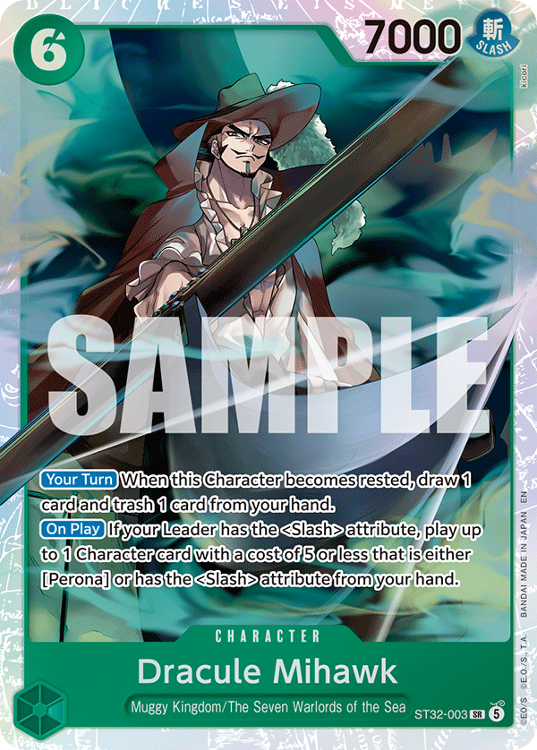
+
Cos'è il deck (e cosa non è)
- Midrange Deck
- Rush Finisher
- Builds Board by developing sticky characters quickly.
- Finds follow-up plays consistently due to the immense amount of card draw.
- Aggressive leaning.
- Really fundamentals heavy deck. Requires good understanding of how to play midrange decks well. Requires good understanding of how to play One Piece well.
- Not a control deck.
- Though it is able to control the board and win resource battles if it has to, your primary win condition is dealing damage, not grinding people out of the game.
- The deck uses freezes to push tempo, not extend the game.
- This isn't OP14 style Mihawk where Law and Bepo was used to extend games multiple turns and use boss monsters like Mihawk and Shanks to control the opponent. It is meant to end games quickly.
- Very consistent. Key pieces are searchable with Otama and Perona.
- Lots of card draw means you will be able to filter towards unsearchable pieces (Vander Decken, Yasopp, Coffin Boat)
- Deck cheats an unbelievable amount of DON every turn. 4 extra DON between leader and stage.
- Deck is strong at racing because of Shanks and Luna.
- Deck is strong at ending games quickly because the excess DON from leader skill lets you develop attackers while attacking for more damage.
- Deck can be weak to early aggression or explosive starts.
- The deck has a higher than normal brick count (It is a GREEN deck so it is to be expected) so it requires a little bit more micro managing than most decks.
- Deck can be weak to large characters that are outside of Luna range if you don't have Vander Decken early.
- Other than that - no real weaknesses. This is an incredibly overtuned deck.
+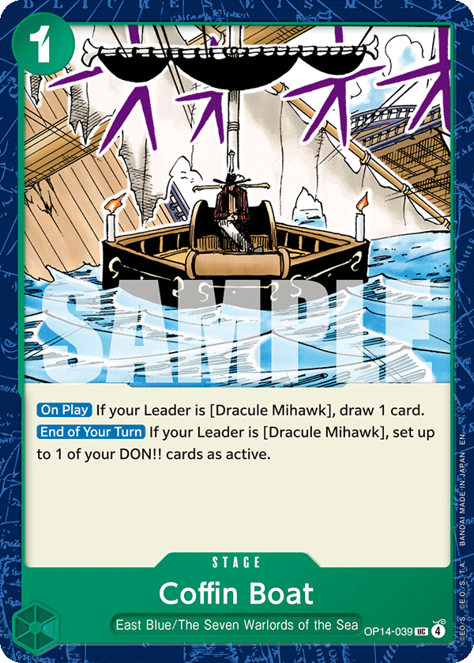
→ +
+ →+
→+
Il leader (5000, +1000 se il leader avversario è <Slash>) riposa 1 carta e attiva 3 DON!! se hai un personaggio da 5+ in campo (poi non puoi più giocare personaggi nel turno); lo stage ne riattiva 1 a fine turno. Quei DON!! "gratis" pagano Samurai, Kin'emon, searcher ed eventi mentre attacchi per 7000 con i corpi da 6000. Le carte in più ti portano a Shanks (12000 rush: attiva 2 DON!! e riposa tutti i personaggi avversari) e a Luna (i personaggi riposati da 7 costi o meno non si rialzano).
Identità OP17: cosa è cambiato da OP16.5
Sam OP17 Mihawk session focuses on how the deck has changed from OP16.5 and why the new Shanks, Vander Decken, Luna, and stun package has reshaped both deckbuilding and matchup strategy. Her broad conclusion is:
- Mihawk is likely the strongest overall deck in the current OP17 environment.
- It is not necessarily Tier 0, and Kaido, Sabo, Robin, and other decks remain valid tournament choices.
- Mihawk's mirror is the matchup that matters most for serious tournament preparation.
- The deck's main advantage is no longer only Law/Bepo endgames. It now has a Shanks plus Vander Decken plus Luna endgame that can invalidate entire boards.
- Deck construction should prioritize strong mirror performance while retaining enough tools to beat Sabo, Rocks, Kaido, yellow Big Mom decks, and other important field decks.
- 00:00:49 Mihawk is "the most likely thing that any of us play in a tournament"; "my opinion is not that it's tier zero"; Kaido is "a very reasonable deck to play for a tournament", especially for nationals.
- 00:01:38 "There is a lot of internal disagreement right now about how the deck list should look."
- 00:08:00 "Stats say" Mihawk is best "by a considerable margin"; her group found some ways to win the mirror going first without tech, but not reliable ones.
- 00:35:37 "47 of these cards are the same" across everyone's lists: the Stun Bonney and Bepo slots are where people differ.
OP17 Mihawk is still fundamentally built around the same strong Wano core: Searchers · Samurai effects · Perona · Oden · Mihawk · Law/Bepo · Rad Beam · Efficient board development · Strong event-based defense.
The deck still wants to:
- Develop a 5-cost body on its first relevant curve turn.
- Build efficient 6-cost and 5-cost combinations.
- Use Perona and Oden to prevent the opponent's board from converting.
- Generate card advantage through Samurai, searchers, Mihawk filtering, and Oden.
- Transition into a late-game bomb turn.
- Use high leader power, Luna, Shanks, Vander Decken, or Law/Bepo to finish.
What has changed is the endgame. In OP16.5, Mihawk mirrors often became Law/Bepo wars. Stun cards were less important because the opponent's board frequently could not convert anyway. In OP17, Shanks changes that. When Mihawk plays Shanks:
- Opponent's board can be rested.
- Luna can freeze the board.
- Vander Decken can remove a key large body.
- Mihawk can attack with a 12k threat on the same turn.
- The opponent is often pushed to zero life while their board is disabled.
This means stuns now have much more value because Shanks creates the board state that makes Luna devastating.
+ +
+- Establish enough board earlier in the game.
- Play Shanks.
- Rest or force opposing bodies sideways.
- Use Vander Decken to remove the most important target.
- Use Luna to freeze the remaining board.
- Attack with a 12k body and other existing attackers.
- Put the opponent at zero or nearly zero.
- Force the opponent to respond immediately without a functional board.
Shanks is especially strong in the mirror because it removes the old assumption that medium bodies automatically retain value into Law/Bepo turns.
Dove concordano e dove divergono
Sintesi| Tema | Impact (Law + Yasopp) | Sam (Mihawk + Perona) |
|---|---|---|
| Natura del deck | Midrange aggressivo con rush finisher; «meant to end games quickly». | Stesso core Wano; «transition into a late-game bomb turn»; il mirror è la priorità di costruzione. |
| Shell 5-6 costi | 4 Law 6c + 4 Yasopp: double develop, Yasopp riposa e si rialza, board control presto. | 6c Mihawk + 5c Perona: corpo più grosso che resta in piedi, filtra i brick, Perona blocca 2 attacchi da 6k. «Every card in this deck is worse with Law than with Mihawk except the Stun Bonney». |
| Law & Bepo | 1 copia: allunga di un turno, punisce chi gioca attorno a Shanks. | Poche copie (non «five» bombe): seconda bomba che comprime Shanks+Decken+Luna in una carta. |
| Vander Decken | 4 copie: removal e set-up di Luna; chiave vs 7-8 costi (Kata/Teach) e vs Shiki. | «Close to standard»: nasce per Sabo, buono «by accident» nel mirror; esiste anche una build senza Decken (Bonney + Bepo). |
| Luna | 2 copie; «games are won or lost by how many turns you can stall with Luna». | Molto più importante che in OP16.5: converte Shanks in un pacchetto tempo che chiude. Unica eccezione: vs Kaido è «uniquely bad». |
| Eventi 3k | 3 Billions + 2 For Fun (vs Saul). | Più Rad Beam (difende i corpi); no Stronger, For Fun poco affidabile, DMG meno necessaria. |
| Coffin Boat | 2 copie. | 2 copie (prima 1); giocala sempre a meno che i DON!! servano per Luna. |
| Stun Bonney | Tech possibile (OP07 Jewelry Bonney). | Tech attivo nel mirror andando primo: toglie all'avversario il turno Shanks. Buona anche vs Big Mom gialli e per togliere King a Kaido. |
| Mirror | Vai secondo; si gioca sul danno; contra i colpi piccoli; trova le Luna. | Vai secondo «for sure»; chi arriva prima a Shanks+Luna vince; stai ad almeno 2 vite prima del loro turno a 10 DON!!. |
| Sabo | Vai secondo; Yasopp sui 2 costi, Oden sui Loki, For Fun sui Saul; 45-55 (50-50 con i tech). | Matchup peggiore ma «I don't feel that bad about it»; ~60% andando secondo; attacca, non fare starve completo; Law/Bepo chiude. |
| Rocks | Vai secondo; Luna spacca tutto ma occhio a Captain John + "Usopp event"; Decken sui Shiki. | Molto favorevole soprattutto secondo; board 6+5 in piedi, Rad Beam vs Shiki, Shanks+Luna; Kyo non cambia molto; attacca a 8 non a 7. |
| Kaido | Vai primo; attacca per 7000 con i personaggi; Yasopp rialza Shanks vs 10 Mom. | «The only matchup where you want to pick first»; Oden su 7 e 9 per fermare King; se mancano King vinci sempre; Luna da scartare. |
| Robin / Big Mom gialli | Vai primo; Yasopp toglie i 4k; Shanks+Decken+Luna sui 4k è la win con. | Favorevole; congela i piccoli attaccanti, spingili bassi prima delle cure; Stun Bonney sul primo turno Big Mom (vs Robin può voler dire sul tuo 6). |
| Enel | Vai primo; pressa una vita a turno, Oden sugli Enel grossi, Shanks sui Reiju. | — (non trattato) |
| Ace Luffy (RG) | — (non trattato) | «I don't have a great answer»: Oden sul loro corpo, attacca, contra la seconda vita; favorito secondo. |
| Black (Elbaph) Luffy | — (non trattato) | Stesso piano di Sabo ma attacchi più piccoli: sempre in faccia. |
Versione A Law + Yasopp · Versione B Mihawk + Perona
Versione A — Law + Yasopp (Impact)
Impact · Slide 8 — The Decklist - Standard Decklist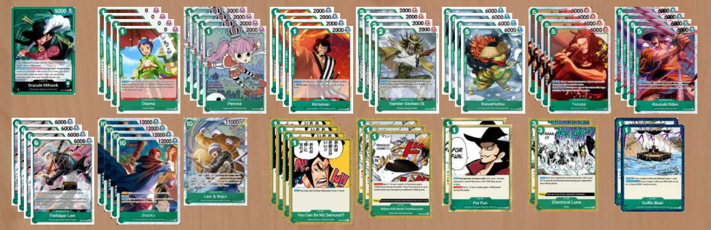
L 4
4 444
444 44
44 444
444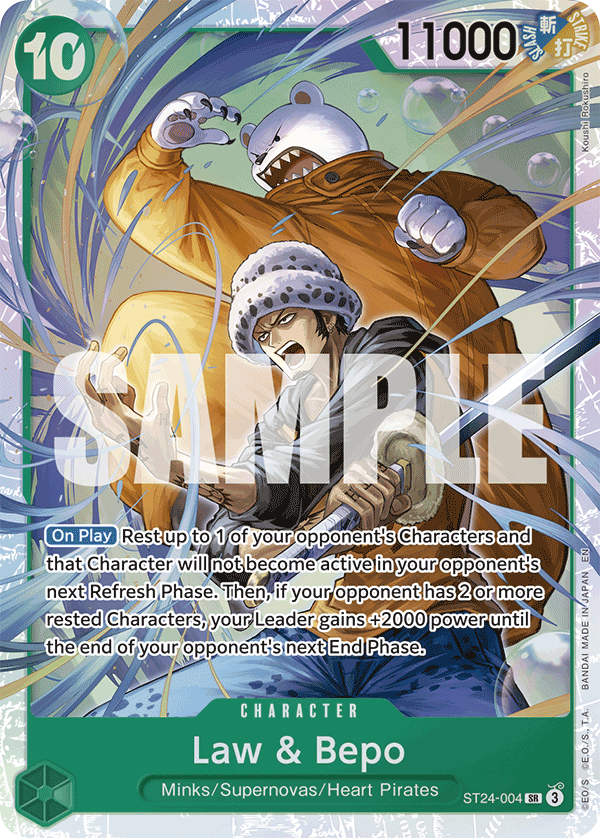
14 3
3 22
22Le carte chiave secondo Impact
- Perona, she finds everything
- Kinemon - helps filter bricks, Law / Samurai target, helps draw towards unsearchable pieces.
- Shanks. This card DOES EVERYTHING. It's a finisher, it's removal, it sets up removal, it sets up Luna. Broken card. Will eventually be pair banned with this leader. Super broken to have a 5 cost 12000 rusher.
- Law, allows you to double develop. Putting in Yasopp rested doesn't matter as Yasopp will restand itself.
- Yasopp is broken. Board control tool in the early game. Very difficult to deal with without hard removal. Also restands your Shanks (important vs Purple or Rocks)
Shanks costa 10, ma il leader ti ha appena riattivato 3 DON!! e Shanks stesso ne riattiva 2 quando entra: i DON!! effettivamente "persi" sono 5. Per lo stesso motivo Impact scrive «Ends the game with a Shanks + 5 extra DON to swing out».
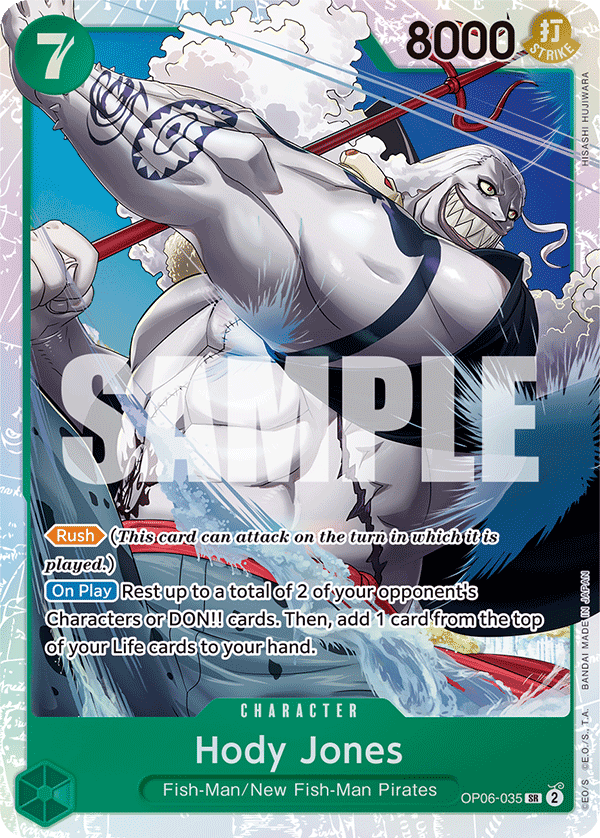
Hody Jones Mihawk 6c +Perona
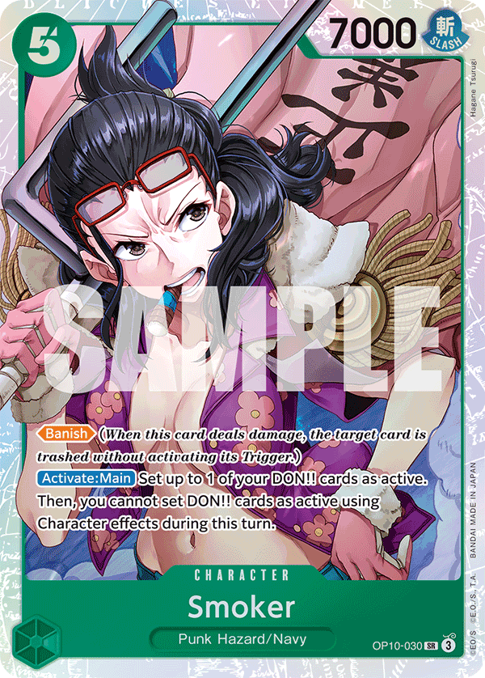
Smoker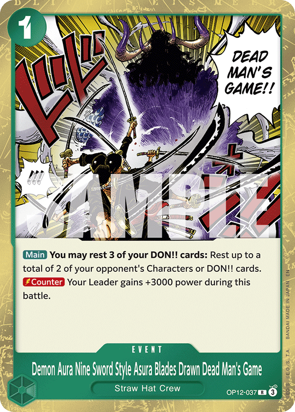
Dead Mans Game OP07 Jewelry Bonney
Law and Bepo
OP07 Jewelry Bonney
Law and Bepo
Versione B — Mihawk 6c + Perona 5c (Sam)
Sam · lista ricostruita dal videoL???????1??43+??- 00:41:00 "I think you should play four Samurai for sure. You really want to see multiple of them in most games and if you can't convert them you can pitch them to Mihawks."
- 00:22:23 "In earlier versions of my deck I was playing two Rad Beams and ten 2ks and one Boat… the other thing I could see happening is that you cut a Rad Beam"; "I could be convinced to play a third [Boat]".
- 00:29:23 Sul numero di bombe: "I just don't think that you need five… what really matters is that you draw two" (a volte ne basta una). ⚠️ Le note scrivono «four copies»: Sam non dice mai "four".
- 00:07:13 Stun Bonney: "you could put tech for that matchup in this slot" (singolare).
- 00:31:12 Niente 7c né 9c Shanks: "you don't get to play either seven or nine Shanks because of Decken existing, they just trade too well with you. The nine is functionally interchangeable with the Decken anyway… the seven you shouldn't be willing to turn sideways."
- 00:38:13 Split 2 Law / 2 Mihawk? "All of the cards in this deck are worse with Law than with Mihawk except for the stun Bonney."
- 01:54:57 Quanto è buona la lista? "Very good in the mirror… very good vs everything except for Sabo, and I don't feel that bad about the Sabo matchup. This is the most you can build for the mirror within reason."
Sam considers the Wano engine largely unchanged and non-negotiable. The core gives Mihawk: reliable early development · card selection · Samurai conversion · access to multiple 6-cost plays · Perona and Oden lines · filtered access to major threats · a consistent way to generate value over a long game.
She is very high on playing four Samurai effects. The deck wants to see several in a game, especially in the mirror where extra draws, extra filtering, and card economy are major sources of edge. If Samurai becomes unusable late, it can still be pitched through Mihawk filtering. That makes it much less punishing to play four copies.
Confronto shell: Mihawk + Perona vs Law + Yasopp
oppure+A major list decision is whether to play the Mihawk plus Perona shell or the Law plus Yasopp shell.
Sam prefers Mihawk plus Perona. Advantages:
- Mihawk is larger.
- Mihawk's developed body remains standing.
- A standing body is much harder for the opponent to contest.
- Mihawk is better in the mirror.
- Mihawk is better into larger-bomb decks such as Kaido.
- Mihawk filters bricks out of hand.
- The filtering effect can be equivalent to, or better than, Law's extra card advantage.
- Perona remains strong into Sabo.
- Perona protects against KO patterns.
- Perona can stop two relevant 6k attacks in Sabo board states.
Law plus Yasopp is a valid alternative shell. Advantages:
- Yasopp is strong on exactly five DON!!.
- Yasopp attacks, rests, then stands again.
- Law can place Yasopp without leaving the new body sideways.
- Yasopp can attack opposing small bodies and help contest board.
- The shell improves some Sabo scenarios.
Concerns:
- Law is worse than Mihawk in the mirror.
- Law relies more on a good opener and surviving one-drops.
- Law and Samurai have anti-synergy because Samurai can expose the one-drops Law needs.
- Law does not filter bricks.
- Yasopp is not as valuable in all matchups as it appears.
- Yasopp is weak into Ace Luffy because Ace's bodies are too large for Yasopp to contest.
- Perona has meaningful Sabo interaction that Yasopp does not replicate.
Sam's bottom line is that Law is mainly played to gain Yasopp access. She does not believe Yasopp is good enough to justify replacing the stronger Mihawk plus Perona package in her current build.
- 00:08:00 "Not everyone is playing the six cost Mihawk anymore"; Yasopp is the reason people play Law. Mihawk is "really substantially better than the Law in the mirror" and vs big-bomb decks like Kaido because the Law body ends sideways and gets contested; Mihawk's filter cycles a brick, Law's +1 keeps it.
- 00:08:49 Yasopp: "you get to fight for their character and draw a card, it's a free rest target, and it's not an incidental stun victim"; Law→Yasopp leaves no sideways body to contest. "Probably the best thing you can summon on exactly five, but that's not that important."
- 00:12:48 Anti-sinergia Law/Samurai nel dettaglio: when you Samurai your ones they become vulnerable to your opponent's ones, and if they get cleared you can't play Law, so you don't get to resolve the Samurai; Law also picks up a body from your board, so on 6 DON you don't get to Samurai before you Law.
- 00:14:23 Josh (Impact) is "really high on" the Law/Yasopp list; his upcoming Mihawk content will focus on it.
- 00:32:50 Mihawk+Perona è solo per il mirror? Mainly, but Mihawk is also just the better card: "the body from the Mihawk is always standing and the Mihawk is bigger".
- 00:37:13 Yasopp è "terrible" vs Luffy Ace because their bodies are all +3 so you cannot contest them.
- Law + Yasopp se ti aspetti tanto Sabo, Rocks e Robin: Yasopp fa board control sui 2k/4k presto, gioca attorno a Shiki rialzandosi, e rialza Shanks vs 10 Mom (Impact vs Kaido/Rocks).
- Mihawk + Perona se ti aspetti tanto mirror, Kaido e Ace Luffy: il corpo resta in piedi, filtri i brick, Perona blocca 2 attacchi da 6k e "float" in un altro 5 costi se muore; Sam stima che rinunci solo a «a couple points into Sabo».
Scelte di lista spiegate (Sam)
Vander Decken
+Vander Decken has become close to standard in OP17 Mihawk. Its main purpose is to improve the Sabo matchup. Why it matters against Sabo:
- Sabo creates a board full of Giant-enabled bodies.
- Its big units can become difficult to contest conventionally.
- Vander Decken lets Mihawk remove or answer an important body.
- It gives Mihawk a cleaner way to interact with the Sabo board before it becomes overwhelming.
Vander Decken is also incidentally good in the mirror: if the opponent plays Shanks, Mihawk can interact with the Shanks; if the opponent plays a major body, Decken provides a practical answer; it supports Shanks plus Luna lines by removing the character that matters most. Sam does not describe Decken as the only mirror plan, but it is a major tool in the most common Shanks endgame.
- 00:15:11 Alternativa teorica: play Stun Bonneys and Law/Bepos and not the Shanks/Decken package. In the mirror you Bonney them off Shanks, then play Bepo. In non-mirrors Bepo "does a similar thing to Luna" (invalidates their board, though their board still contests yours), and a second Bepo stacks with the first. Vs Rocks the Bepo game is "for sure worse than the Shanks game" but Mihawk stays ahead; Bepo is "for sure very good vs Sabo". Cutting Decken frees space for more counter events / diversified fives. "Something we will explore more in the next couple of days."
- 00:41:00 Forma di quella lista: more total sixes (some Laws in addition to Mihawks) so you "double summon every game" — five-drop on 5, Mihawk body, then Law→Bonney — plus more Laws and more events.
- 00:16:48 Q: Shanks/Decken non è meglio vs yellow e Kaido? For sure better into Kaido; not meaningfully into yellow (Bonney their first 10-drop turn, swing your board, Bepo next turn: they have one turn to kill a 7k leader). "Without Decken for sure you will lose to Kaido", but if everyone plays Decken, Kaido gets worse and less popular.
Shanks e Luna
Shanks is the defining OP17 Mihawk bomb. Its role is not merely to remove a body. Its real value is that it creates a board state where Luna becomes a mass tempo swing.
Luna is now much more important than it was in OP16.5. In the old Law/Bepo-focused Mihawk endgame, the opponent's board often already struggled to attack into a large leader. Stuns were less necessary. In OP17:
- Shanks rests the opposing board.
- Luna freezes the entire group.
- Mihawk gets a tempo turn without taking meaningful return pressure.
- The opponent often cannot make up the lost turn because Mihawk's board is already attacking for large numbers.
Luna is not merely defensive. It is a card that converts Shanks from a strong threat into a game-ending tempo package.
Stun Bonney
Sam is testing Stun Bonney as mirror tech. The key use is simple: Stun Bonney can take the opponent off its Shanks turn.
In the mirror, the player going second often has the natural advantage of playing Shanks first and then using Luna to punish the opponent's board. Stun Bonney gives the going-first player a way to disrupt that timing. Why Bonney is playable even in a Mihawk build:
- Law into Bonney creates a body that often enters sideways anyway.
- That body can be removed by Luna, combat, or other interaction.
- The difference between Law plus Bonney and standalone Bonney on the relevant turn may be smaller than it appears.
The card improves the mirror and has incidental value into yellow Big Mom decks. Against yellow Big Mom decks, Stun Bonney can stop their first major Big Mom turn. Those decks frequently have little productive to do if they are taken off their first important curve turn. Sam is not fully certain that Bonney is mandatory. It is an active testing choice, but she has been happy with its mirror role.
OP07-026 Jewelry Bonney (5c 6000): «Up to 1 of your opponent's rested Character or DON!! cards will not become active in your opponent's next Refresh Phase». Giocata sul tuo turno a 9 DON!! su un DON!! riposato dell'avversario, il turno dopo lui si rialza con 9 DON!! invece di 10: niente Shanks. Nel video 00:31:12: spegnere il 10 costi di Rocks "is good, but that's not why it's there"; Bonney non fa nulla vs Sabo (01:15:54).
Law & Bepo
Sam plays Law/Bepo as a second bomb rather than the entire deck's primary endgame. She does not believe four copies are necessary. ⚠️ nel video dice «I just don't think that you need five» — mai "four" Why:
- The first Shanks package is difficult to replace.
- If Shanks does not end the game, Law/Bepo is an efficient second bomb.
- Law/Bepo can replace a complicated multi-card follow-up sequence.
- It stuns Shanks.
- It invalidates the rest of the board by raising the leader.
- It can preserve enough hand to survive the turn after Shanks plus Luna.
- It gives the player another route to put the opponent to zero.
In many games, one Shanks turn puts the opponent at one or zero, and the second bomb is only needed when the first Shanks turn does not end the game.
- 00:19:57 Because other people are not playing Bepo, once zeroed they have no way to survive your jam "except Law block stuff", and even without DMG you can Oden the Law; from their perspective you could also have Shanks, which interacts with anything on board.
- 00:29:23 "You need to draw two [bombs]. Sometimes you get away with one." Law is "a more consistently good second bomb because of how many things you need to pair with the Shanks."
- 01:58:19 Recap: "good as your second bomb in most matchups."
Law and Bepo can extend the game an extra turn while developing 1 additional attacker. Good way to punish people who are playing around Shanks (swinging with everything). Law and Bepo cannot extend the game forever anymore due to Shanks + Decken stuff in the mirror so that's why we don't build our deck around it anymore, however I've really liked the 1 copy.
Coffin Boat
Sam plays fewer Boats than previous Mihawk builds. Reasoning:
- The current deck contains fewer events.
- Shanks and other expensive middle-game cards naturally use more DON!!.
- There are fewer turns where the deck simply has spare DON!! to convert an event.
- 2k counters are often more valuable than a Boat in the mirror.
- The major value of Boat is now its cantrip effect, not constant event conversion.
She could be convinced to play a third Boat, but she does not think Boat is as essential to OP17 Mihawk as it was to the event-heavier OP16.5 version.
Rad Beam (Billion-fold)
Rad Beam remains a core card because it defends the board. Sam's distinction:
- Most 3k events are mostly defensive life tools.
- Rad Beam can defend both life and key characters.
- The most important event turns often happen in the midgame when the opponent tries to contest a character.
- Saving a key body can create several future attacks and prevent the opponent from regaining tempo.
She therefore wants multiple Rad Beams even if she is playing fewer Boats.
- 00:22:23 Nel mirror i colpi da una carta a metà partita si contrano con i 2k; l'avversario "is mostly not swinging eights at you in the middle of a game" perché sviluppa, cerca, fa Samurai e tiene DON!!: pochi spot in cui Rad Beam batte un 2k.
- 00:26:35 "Most of the reason that there are this many Rads in my deck": in the middle of the game your opponent will try to contest your character and you get to save it with a Rad Beam — "that's just not true of any of the other events".
- 00:40:13 Tagliare 2 eventi per Zoro 2k? No: "you do care to resolve multiple Rad Beams per game".
Tech e carte scartate
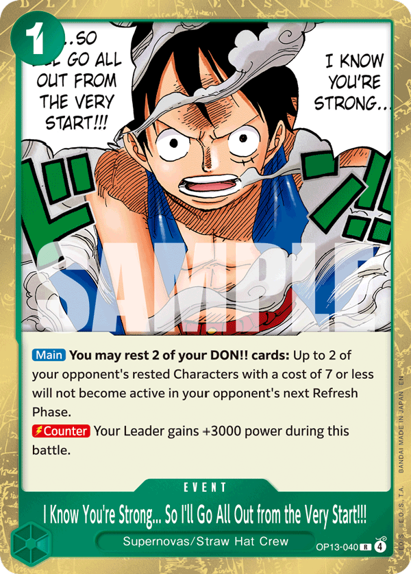
Stronger
Sam thinks Stronger is poor. Why:
- It does not stun enough bodies.
- Mirror boards are often four to five wide.
- Luna is dramatically better at stopping the board.
- In many cases, using Stronger saves a similar number of cards as a normal counter event.
- It does not defend key bodies in the way Rad Beam does.
For Fun
For Fun has become less reliable. Why:
- Players now play around it because they do not want to be punished by Luna.
- Mihawk and Oden frequently freeze or remove the most appealing target.
- Shanks no longer guarantees the same easy For Fun setup that it once did.
- Sabo can sometimes present Zoro or other cards that do not line up well.
For Fun may still be playable, but Sam does not see it as a major priority in her current shell.
DMG
Sam thinks DMG is less necessary now. Why:
- The mirror often ends through zeroing the opponent with Shanks pressure.
- Mihawk can frequently create lethal without needing a dedicated DMG finish.
- Red-Green, the matchup where DMG mattered most, is not expected to be a major part of the format.
- Other players are also playing fewer events, reducing the need for DMG-based lethal lines.
- 00:24:12 "The other 3K events I think are really bad. The main one that people play is Stronger… you just need to stun more things than two, in the mirror boards are four or five wide"; 00:27:23 "you essentially never care to counter with the Stronger event".
- 00:25:00 For Fun: "you don't get to force it to happen like you did with seven Shanks"; vs Sabo "they can just present Zoro and you don't get to Fun their guy".
- 00:25:48 DMG: "the DMG lethal thing doesn't occur that much anymore… you zero your opponent and it's impossible for them to counter"; Red-Green is "unplayable in the format".
- 00:30:26 Hody: "not terrible, but you don't really need the extra Fishman… I'm just not really willing to play the brick."
- 00:39:00 Zoro 2k: "would be good in the mirror, but the 2Ks that are here instead are too important"; its upside only exists when the opponent has few ones.
- Smoker (tech di Impact) non viene mai nominato nel video.
«For Fun was another inclusion to help deal with Sauls as it is very costly to deal with 7000 power units otherwise. All these tools are here just to buy you extra time as this is one of our worst matchups.» — La differenza con Sam sta nel piano vs Sabo: board control (Impact) contro attacco in faccia (Sam).
Gameplan primo e secondo
Mulligan
Going first
Perona
Kinemon
Stage
Otama
YCBMSamurai
Yasopp
Going second
Perona
Kinemon
Stage
Otama
YCBMSamurai
Yasopp
Oden + Law
Cards you are generally looking for:
- You're looking for the card draw pieces so you can structure your hand to play the game.
- You're often trying to find with your searches / card draw a play for T3 (5 or 6 DON Turn) T4 (7 or 8 DON turn) and T5-6 (Shanks)
- Because what you need is so wide to play throughout the game, you need to make sure you mulligan for your cards that give you extra cards / looks in the early game.
- Perona is REALLY Important!! You want to bounce her with Law to continue to find follow up.
Andando primo
Impact · Slide 12 — Going First CurveT1 Kin'emon 1 DON!!
Kinemon ideally. Any searcher works but Kinemon costs 1 DON on turn 1 whereas it costs 2 DON on future turns.
T2 Perona / Otama → Samurai 3 DON!!
/→Perona / Otama -> Samurai. Good turn to Samurai
T3 Oden / Yasopp 5 DON!!
/Oden / Yasopp. Develop a 5 that draws a card. Convert additional Samurais / Stage using free DON from your leader skill.
T4 Law → Oden / Yasopp 7 DON!!
→/Law -> Oden / Yasopp. Double develop. Hand neutral play. Replay Perona if you have it. Find a play for next turn.
T5 Law → Yasopp → Vander Decken / Law + Oden 9 DON!!
→→Law - Yasopp -> Vander Decken if you're playing a matchup with important 7-8 DON characters (8c Kata/Teach is a big one vs Robin), Law + Oden if you aren't. This is the ideal turn to cycle searchers and Samurais to find pieces for 10 DON turn.
T6 Shanks + Decken e/o Luna 10 DON!!
+e/oShanks + Decken and/or Luna, depending on the matchup what you need, but no matter what you need Shanks. You can also use the free DON here to play searchers etc to find more plays if you don't need to Decken.
Andando primo nel mirror: il problema strutturale (Sam)
The player going first has a difficult structural issue. If both players develop optimally:
- The going-second player reaches Shanks plus Luna first.
- The going-first player may have a wide board.
- Shanks rests the board.
- Luna freezes it.
- The going-second player attacks with a 12k Shanks plus additional bodies.
- The going-first player can be pushed to zero.
- Mihawk at zero has limited reliable ways to play another turn.
This is why leader life management has changed in OP17.
Stun Bonney is the main experimental answer for the player going first. If Bonney prevents the opponent from playing Shanks on curve:
- Their planned Shanks plus Luna line becomes unavailable.
- Their 9-DON!! turn becomes awkward.
- They may only be able to Perona a body or attack a single rested character.
- They do not establish a major bomb.
- The going-first player becomes the first player who can Shanks plus Luna.
The opponent may still send several attacks, so the Mihawk player must be willing to counter enough damage to survive. However, if the opponent cannot play Shanks, the Mihawk player can often safely go to one life because the opponent's follow-up is much weaker.
If Stun Bonney is unavailable, Sam recommends using the odd-DON!! turns to push life efficiently. On 9 DON!!:
- Do not automatically play another 6-cost body.
- The opponent will often Shanks plus Luna the board anyway.
- The extra body may not matter.
- Use the available DON!! to make larger attacks.
- Play Perona to reduce the incoming attack count.
- Push the opponent toward one or zero life before their bomb turn.
The logic is simple: if both players reach one life, the player who zeros the opponent first wins the initiative. The opponent then has to kill immediately. If the opponent cannot kill through your counter and leader power, you win the following turn.
The 6-cost body on 9 DON!! is less valuable than it was in OP16.5 because the opponent's Shanks plus Luna turn can invalidate the entire board. The player going first should often choose: Perona plus larger attacks · Stun Bonney plus development · more aggressive face pressure · a defensive event posture — instead of 6-cost development that is immediately frozen with the rest of the board.
- 00:50:00 Senza Bonney: five on 5 (gets frozen); six + five on 7; they Oden or Perona; on 9 play just a Perona (skip the six, because the whole board gets Shanks-Luna'd anyway) → 7 DON to attach to whatever can attack.
- 00:48:21 La matematica del turno Bonney: if the second player went Mihawk→6 (or Mihawk→5), then Mihawk→another 5, only one of their characters is sideways, so with Bonney played you can contest only that one; they will have at least three attacks. Going to 1 is fine "unless you are dead to 10k+12k or 11k+12k from the leader and the Shanks" next turn.
- 00:46:46 Perché Bonney fa male: the going-second player has been digging specifically to set up Shanks+Luna, not for hands that play against Bonney. 00:47:33 Their 9-DON recourse: Perona your standing bodies, maybe attack over one sideways body; they establish no bomb and you become the first to Shanks-Luna.
- 00:50:50 After you zero them first: they Shanks-Luna you, you go Shanks-Decken(-Luna), and as long as you're not dead to their next lethal ("at best another Shanks, big number big number, like 11-12") you win. "It comes down to how many Samurai both of you were able to resolve."
- 00:52:26 If the opponent Samurai'd two bodies on that turn, Bonney + Luna freezes three and "there's no damage coming at you, they're untapping with one attacker".
- 01:01:25 Q (la "curva dispari"): she always forgoes the six on 9 DON. You can't really skip the six on 7 or the five on 5; 9 DON is the only place you reliably spend extra DON attacking; "it's really only one more DON". She will not play Otama "for no reason" on 7 or 9.
Andando secondo
Impact · Slide 13 — Going Second CurveT1 Doppio 1 costo 2 DON!!
+Double 1 cost. Be sure to use ones that draw before you search to know what pieces you need.
T2 Searcher + primo Samurai 4 DON!!
→Continue using searchers. This is the first Samurai turn. Make sure to leave a character active for Law if they can actually clear your characters.
T3 Law + Yasopp 6 DON!!
→Law + Yasopp ideally. You can use your leader skill to then rest something, and then pressure the rested character creating a 2 to 0 board lead.
T4 Law + Oden 8 DON!!
→Another Law, ideally with Oden on this turn so you can stun a relevant attacker while pushing with your other 6k bodies and excess DON to make good attacks.
T5 Shanks 10 DON!!
+poiShanks. From here on out you're playing Shanks. Recognize when it is your last turn, then you can play the single Law and Bepo to extend the game 1 more turn if necessary. Make sure to count how many turns you need to actually end the game.
Andando secondo nel mirror (Sam)
Sam prefers going second in the mirror. The normal going-second progression remains powerful:
- Develop a 6-cost body on 6. ⚠️ le note scrivono «65-body»: nel video è "a six drop on six and then a six drop on eight"
- Develop another 6-cost body on 8.
- Reach Shanks timing first.
- Luna the opponent's board before they can execute their own Shanks turn.
Going second gives access to the first major tempo bomb and naturally creates better curve efficiency.
- 00:43:34 Perché six-on-6 / six-on-8 regge: if you assume the opponent Odens you on 7, only one of your units is sideways on 8, so the second six-drop still converts.
- 00:54:48 Going second: "six on 6, six on 8, Shanks is very easy to replicate". If Bonney becomes popular, you need Perona or Perona+Luna turns of your own on 9 DON; you can also Bonney them back ("they still will not be able to play Shanks, so you are still ahead").
- 00:58:07 Primo o secondo nel mirror? Second, "for sure".
Early / Mid / Late game
- Draw cards and find pieces.
- Search for 5-6, 7-8, 9-10 DON Turns. Make sure you don't take excess pieces. Make sure you spend card draw and searches to find and complete your curve.
- Take early damage to draw additional cards as you are a combo heavy deck and are looking for pieces as you have many moving parts.
- Establish your attackers across 5-9 DON turns. These 6K bodies will convert to 7K swings with the free DON from your leader ability.
- Cycle any additional searchers with extra DON on the 7-8-9 DON turns. Make sure you're set up for the late game.
- Cycle towards Shanks combos and counter events to survive.
- Pressure your opponent. Make it so you need as few Lunas / Shanks as possible if you can't find all of them to close the game out. Try to prepare for 1 extra turn than you think you'll need.
- Use Shanks combo to disable opponent's boards while pushing damage.
- Try to end the game in 1 to 2 turns. Shanks is the best finisher the game has ever seen. Use it wisely.
- Law and Bepo can extend the game an extra turn while developing 1 additional attacker. Good way to punish people who are playing around Shanks (swinging with everything). Law and Bepo cannot extend the game forever anymore due to Shanks + Decken stuff in the mirror so that's why we don't build our deck around it anymore, however I've really liked the 1 copy.
- Use early game to dig for pieces and find more continuing card draw and follow up plays.
- Use mid game to establish attackers. Use free DON to convert more card draw spells / stages. Try to push a damage every turn with the leader skill.
- Use the later turns to develop Shanks. Try to time your Lunas with however many turns you think the game will last. Shanks + push a bunch of 7s is also an incredible turn. Why is Shanks a 5 cost 12000 rusher in Mihawk? Unreal.
- Set up wins by aggressively pushing 7s and getting your opponent into Shanks kill ranges. Without a board you can play Shanks, tap down your stage / searcher and send a 10+12 swing. If it takes multiple Shanks to win, plan towards closing out games via multiple turns with multiple Shanks. This card is so broken lol.
Come chiude il deck
- Ends the game with a Shanks + 5 extra DON to swing out.
- Work your way backwards from there - how do we get in a position to win?
- We Shanks + Luna / Decken to extend the game while also pushing a damage with a Shanks.
- Before that - we need them in range of a 2 turn lethal with back to back Shanks.
- We convert our board in the middle of the game into attacks into the leader to get additional life and cards.
- Which means we need to build a board while pushing damage.
- Use leader skill to push damage to get your opponent in 2 turn lethal range with leader swings / your board. End games quickly. Games should end on the 2nd 10 DON Turn. Can extend the game 1 more turn with Law and Bepo if necessary.
- Map out the damage you're dealing each turn.
- Think about the game as a whole. Which turns you're dealing which damage. In Pokemon they call it Prize Mapping. In Riftbound they call it Point Mapping. In One Piece we just call it dealing damage.
- Think about how you're getting that damage. T2 you're getting a damage. T3 you're using free DON from leader skill to push a damage. T4 you're doing the same thing. Maybe getting cards while doing so. Etc etc.
- Take an extra turn than you think you'll need as you'll often need a turn to get the cards out of their hand once you've gotten all or most of their life. It isn't as easy as get them to 0 and win.
- Don't go for risky lethals, most of the time Mihawk can survive their clapback as they have the "free" Rad Beams and Lunas etc every turn. Just use a turn to extract value and force them to go all in against you. Just make sure to put them in those positions when you actually have their attacks covered (count!)
- Losing scenarios are always winnable because of Shanks.
- Use Shanks + Luna to get additional turns. Use Shanks to put you closer to the win condition.
- No matter what, this deck's win condition is killing the opponent while they're at 0 with an unblockable swing (Shanks taps down all the blockers) so make sure you're pushing damage.
- Try to extend the game additional turns with Law and Bepo, Law + Oden, etc. to get that extra damage with your leader swings.
- Counter aggressively to buy yourself more time to push more damage.
On 10 DON!!, Mihawk should almost always play its bomb. Why:
- Delaying lets the opponent play their bomb first.
- The game becomes a race to zero the opponent before they zero you.
- Shanks creates immediate 12k pressure.
- Law/Bepo can compress multiple interaction effects into one card.
- Waiting generally creates no real advantage.
The rare exception is a Stun Bonney plus another development line that prevents the opponent's entire bomb turn. In most games, however, Mihawk should simply play the 10-cost bomb.
01:04:36 Dal video: "Always slam the 10 drop on 10?" Yes, you cannot afford to delay; Bonney + another five on 10 is theoretical because it requires them to have cleaned up your board, "which doesn't really happen".
Fondamentali
- Not playing aggressively enough. You get three free DON a turn. Use them to push damage.
- Not cycling bricks. Samurais and Coffin Boats need to get out of your hand aggressively. Kinemon in the later stages of the game can filter bricks on the 8/9 DON Turn or in combination with Shanks. Make sure you don't stuck on million bricks.
- Not bouncing Perona with Law. You want to use Perona to find continuation or critical pieces (Billions, Luna) as Perona hits most of the deck.
- Undervaluing board control. Yasopp their guy and jam it down is a very strong play in the early game.
- Not getting event counter out of your hand. You will end up spending most of your DON. Make sure to use 1 a turn in the later stages of the game if you have Coffin Boat. If not, look for turns where they're likely to attack you for damage, and weave them in.
- In most matchups you can take fairly aggressively. You need combo pieces and you have the ability to stabilize games at 1-2 life fairly easily when you combine Luna / Billions / Bepo etc.
- In the mirror - try to counter smaller hits as Shanks will swing too big to counter.
- Make sure you don't set yourself up for losses. Don't take damage you don't plan on accounting for in future turns. If you think defending a 5 or 6 on this turn means you can take an 8 the next turn (like when they drop Linlin and attack with their triggers) then you should do it if it doesn't cripple your resources. Think about the whole game, not just this one turn.
- For the most part - your 6K bodies sticking in the mid game is how you convert wins. Make sure to protect them. Most of the time they're bigger than your leader. Most of the time - Billion will keep them alive. Make sure to protect your board.
- You can start letting pieces of your board die when you're scaling into Shanks, etc in the late game. Calculate if you're going to need the counter to stay alive vs having an extra 6k body to swing. Ask yourself if that body's necessary to win. Often times you'll win by dropping back to back Shanks anyway.
Mihawk cannot casually go to zero against Shanks Mihawk. Why zero is dangerous:
- Mihawk has limited blocker access.
- Law can be answered by Oden, Shanks, DMG, or other interaction.
- The opponent can create a 12k swing on its bomb turn.
- The opponent can freeze the board and remove the ability to defend through combat.
- Once at zero, Mihawk may have no reliable way to survive a second large push.
Sam's guideline: try to be at least two life at the beginning of the opponent's 10-DON!! turn. Sometimes two is sufficient if Rad Beam and counter math cover their next turn. In many games, this requires countering more of the one-card hits in the middle game than OP16.5 Mihawk did.
00:44:22 Dal video: the bomb swing is now a 12 instead of the 8–9 you got with Bepo; at zero Mihawk "does not have any way to reliably prolong the game — all you can do is counter, you do not have blockers". 00:45:11 Whether you need more than 2 life "depends on whether you'll be able to counter out of their lethal if they send it on their 12-DON turn"; with Rad Beams, 2 is often fine.
- As a rule of thumb, try to think at least what you are going to use within the next 2 turns. Don't try and hold onto non-counter you don't see yourself playing within the next two turns.
- When you are playing towards a specific gameplan - try to filter out cards that don't contribute to this gameplan.
- When in doubt, discard non-counter before discarding counter. The deck plays a lot of bricks and it can be easy to get stuck on a lot of non-counter.
- Try to make sure to not get stuck on plenty of events. Make sure you weave them in from time to time to avoid getting clogged up in the late game.
- Important to use the leader skill to push damage. As we are an aggressive leaning midrange deck, it is important to use those extra DON to convert damage since we don't want to play forever games with our opponents.
- We also need to make sure we cycle Samurais and Coffin Boats with those extra DON so we don't get stuck on nothing but non-counter.
- Calculate how many DON exactly you'll need for counter events. On average you want to spend 1 a turn, but think about how much damage they can actually do. Count their swings.
- On the last turn, leave up as many defensive events as you can. Try to end on 3 if you don't need to Luna.
The mirror has more turns where events can become stuck. If you use Shanks, Vander Decken, Luna you often spend all available DON!!. That means a Rad Beam held too long can become unusable. The practical rule:
- Use Rad Beam on the turn before the all-in Shanks plus Luna turn if it saves a meaningful body or preserves enough life.
- Do not hold every Rad Beam just because it looks valuable.
- Plan one turn ahead: if the next turn uses all DON!!, convert your event now or it may remain dead in hand.
Principi generali (Sam)
Sam's deckbuilding priority is mirror equity. Why:
- Mihawk is expected to be extremely popular.
- Mihawk is likely overrepresented among strong players.
- Mihawk is likely overrepresented in top cut.
- Losing the mirror repeatedly is unacceptable for a tournament deck.
Stun Bonney, Shanks, Luna, Vander Decken, and Law/Bepo all contribute directly or indirectly to mirror success.
Before using DON!! for an attack, ask:
- Does this swing force a real card?
- Does this attack put the opponent at one or zero?
- Does this remove a character that enables their board?
- Does it create a two-turn lethal?
- Is the DON!! better spent on Samurai, a searcher, Rad Beam, or a development?
Do not spend DON!! attacking merely because it is available.
Mihawk should search based on the upcoming bomb turns.
- Shanks
- Luna
- Law/Bepo
- Stun Bonney, if it matters on the next turn
- Rad Beam, if an event needs to be converted before the all-in turn
- Samurai, if hand size and card access are the limiting resource
- Perona
- Oden
- Shanks
- Law/Bepo
- Rad Beam
- A playable curve over a greedy bomb search
- Oden
- Perona
- Rad Beam
- Shanks
- A plan to stop King
- Perona
- Oden
- Shanks
- Luna
- Rad Beam
- Pressure over excessive reactive play
- 01:20:41 È raro mancare i pezzi tardi "because you target them with searches/Mihawk filters"; se manca Shanks gioca comunque Bepo (è buono da solo); se hai Shanks senza Decken stai correndo (Shanks-Luna). Presto è più comune mancare: play the next-best thing — "you win by making the best sum of actions".
- 00:28:33 Attacchi in ogni matchup? "Yes", including Sabo, with caveats.
- 01:03:00 I DON!! extra su 7 e 9 vanno su searcher o Samurai solo se la mano non è ancora "made"; serve anche counter.
Matchup
Tabella riassuntiva
Sintesi| Matchup | Primo / secondo | Impact | Sam |
|---|---|---|---|
| Mirror | SECONDO | Go 2nd. «This matchup is about damage.» | Second "for sure". Il più importante; chi arriva prima a Shanks+Luna; Stun Bonney andando primo. |
| Sabo (Red/Black, Elbaph) | SECONDO | Go 2nd. «One of our worst matchups (still 45-55, with the techs at worst 50-50).» | Worst major matchup, ~60% going second; "I don't feel that bad about it". |
| Rocks | SECONDO | Go 2nd. «Extremely weak to Luna.» | Strongly favored, particularly going second. |
| Kaido | PRIMO | Go 1st. «Ramp decks typically want to go first.» | "The only matchup where you want to pick first"; "pretty chill", if they miss King you always win. |
| Robin / Big Mom gialli | PRIMO (Impact) | Go 1st. «The matchup is not good for Robin.» | Favored; Robin is "the best yellow slop deck" and the most tedious (triple ramp). |
| Enel | PRIMO | Go 1st. Pressa una vita a turno. | — non trattato |
| Ace Luffy (RG) | SECONDO (Sam) | — non trattato | "I don't have a great answer"; favoured second; Perona "insanely good". |
| Black (Elbaph) Luffy | — | — non trattato | Same plan as Sabo but smaller attacks; always go face. |
Mirror — Mihawk vs Mihawk
- This matchup is about damage. Understanding how to deal damage and how to map damage across multiple turns is going to be the key to victory.
- Drawing multiple cards in the early game will give you ammo to counter swings while also ensuring you have your curve. Resolving Samurais is very important in making sure you actually can win.
- This matchup is very different to how it used to be played prior.
- We play less overall stuns than before. Less Peronas means attacks will go through. When characters get to attack - you need to size the attacks with the goal of dealing damage, not extracting cards.
- Good numbers to attack - 7000, the deck plays only 8 2000 counters and often puts Otama on the table. 8000 if they don't have a DON up to get a life or 2 cards. 9000 if they don't have 8 rested cards. 10000 to attack past Billionfold. 6000 attacks are OK but it is easy for the deck to produce 1000 counters. It is easy for this deck to fail 2K checks.
- Follow the curve and gameplay instructions listed as this matchup doesn't deviate much from the plan. Get your opponent to 1 life to set them to 0 with Shanks and freeze their attackers with Luna, then you can do a huge swing with Shanks when they're at 0 and should kill them.
- Try to counter smaller swings early. Don't get stuck on too many events as your free DON from leader can't always be held up in the late game, especially if you have to freeze their characters with Luna.
- Luna is very important in the mirror. Try to find the copies with Perona / drawing for them, as the extra turns from Luna save you a lot of counter in the mid-to-late game. Games are won or lost by how many turns you can stall the game with Luna. That's why we included a Bepo to protect ourselves 1 turn from the 6000 power bodies by becoming an 8000 leader and disabling their Shanks.
The mirror is the most important matchup in OP17 Mihawk. Sam expects Mihawk to be: the most popular deck · the deck most likely to be present in top cut · the deck every serious Mihawk list must prepare to face repeatedly.
The mirror is no longer just a Law/Bepo war. It is now a race to:
- Establish board.
- Preserve life correctly.
- Play Shanks first.
- Use Luna effectively.
- Prevent the opponent's Shanks turn with Stun Bonney.
- Put the opponent to zero before they do the same to you.
Le linee complete di Sam per il primo (Stun Bonney, pressure plan, niente 6 costi a 9 DON!!) e per il secondo (six on 6, six on 8, Shanks) sono nella pagina Gameplan, sezioni «Andando primo» e «Andando secondo». Qui sotto le parti specifiche del mirror.
Law/Bepo is especially useful after the first Shanks exchange. A common sequence:
- Opponent plays Shanks plus Luna.
- You survive with one or two life.
- Your board is frozen or partially invalidated.
- You play Law/Bepo.
- Law/Bepo stuns Shanks.
- Your leader becomes larger.
- Opponent's board cannot meaningfully convert.
- You spend one card instead of needing another Shanks, Vander Decken, and Luna combination.
- You preserve enough hand to survive.
- You counterattack and put the opponent at zero.
Law/Bepo compresses a multi-card recovery line into one card. That is why Sam still values it highly as a second bomb.
- 00:58:59 Decken sul 7c Shanks avversario? Often yes: you're not just turning on your 6k bodies, you're killing a 9k that attacks you. Certainly going second: if they play the seven on 7, Decken it, because you're not going to Decken on 10 anyway (their 9-DON turn is a five or six+five). Going second you basically never Decken except if you need a second turn after your first Shanks and have no Bepo (then you Decken their Shanks). Going first also generally correct but less so if you're Luna-ing their board anyway.
- 00:42:46 Early game: it's all about resolving Samurai and developing; "double-six games" decide the mirror.
- 00:54:48 Pianifica i DON!! per Rad Beam: if you play the entire Shanks-Decken-Luna combo that takes all of your DON, so convert the Rad Beam the turn before.
- Secondo: 6 costi a 6, 6 costi a 8, Shanks + Luna a 10. Se Bonney diventa popolare, prepara un turno Perona (+Luna) a 9 o ri-Bonney.
- Primo: 5 a 5, 6+5 a 7, a 9 niente altro 6 costi: Stun Bonney sul loro DON!! (li togli da Shanks) oppure Perona + attacchi grossi per portarli a 1-0 prima della loro bomba.
- Vita: almeno 2 all'inizio del loro turno a 10 DON!!; contra i colpi da 1 carta a metà partita (2k), Shanks colpisce troppo forte per essere contrato.
- Numeri (Impact): attacca a 7000 (8 counter da 2k nel deck), 8000 se non hanno un DON!! su, 9000 se non hanno 8 carte riposate, 10000 per passare Billion-fold.
- Seconda bomba: Law/Bepo dopo il loro Shanks+Luna comprime la risposta in una carta; oppure Decken sul loro Shanks se non hai Bepo.

Vs Sabo (Red/Black, Elbaph)
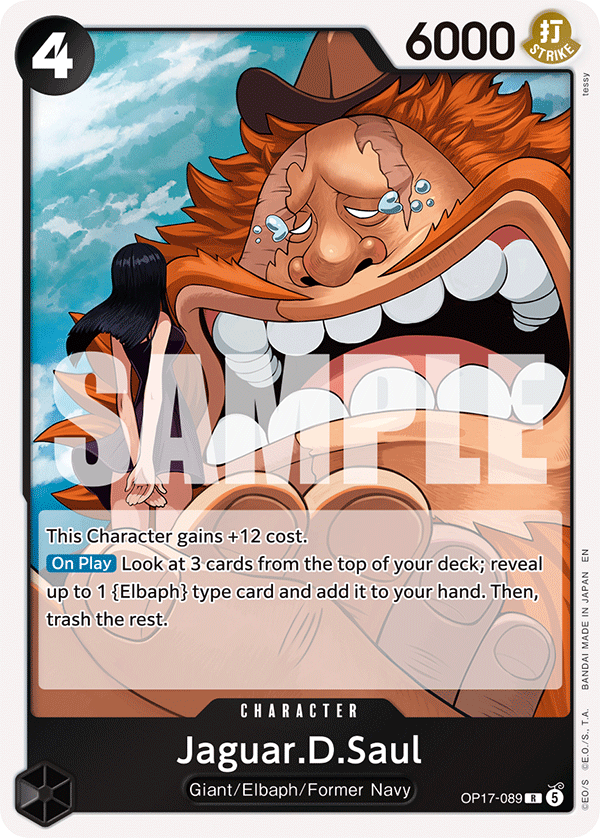
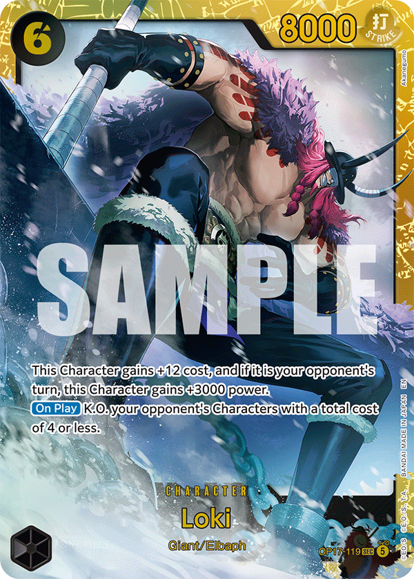
- Sabo is another type of midrange deck that revolves around planting a lot of 2/5000 power units that provide some sort of value. It punishes you for attacking with individual bodies because of Robin the amount of stats it can put into play can be overwhelming.
- Yasopp was one of the cards put into the deck originally to help deal with the early characters from Sabo while not losing value. It is meant to board control the 2000 power characters before they have Giants in play. This reduces the amount of pressure coming back at you and gives you more time to extend to your Shanks + Vander combo to deal with their big characters.
- Try to not put Otama on the table if you can help it, they're going to 2K check you often with their 6000 power weenies so I don't want to get caught without. Try to use other searchers, etc to resolve your Samurais.
- Play for board control so that your Odens are more impactful, stalling their Lokis is ideal as you're getting the most value stunning 9000 power units that way.
- For Fun was another inclusion to help deal with Sauls as it is very costly to deal with 7000 power units otherwise. All these tools are here just to buy you extra time as this is one of our worst matchups (still 45-55 btw, and with the techs I think it's at worst 50-50)
- Use Yasopps to deal with Zoro ideally so that Vander Decken can land on important characters like Luffy / Loki.
- If you can remove their only Giant then all their weenies fall immediately after.
- The Sabo curve is fairly obvious what they're going to play. Try to leave up DON if possible on certain turns to protect yourself from 7000 power attacks with 1 card. It will be hard to block the 9000 power attacks later so making sure we can stop the 6000s and 7000s while we can is important. Be careful about bleeding life.
- Very important to make sure you have a reasonable strategy to counterpunch them. You won't be able to fully stabilize but their defenses are weak so you are often able to 2 turn with Shanks back to back if you can get them to 2. If you aren't in range of dying (count lethals) - then do your best to set up a 2 turn kill.
Sam sees Sabo as Mihawk's worst major matchup. The matchup is more difficult when Mihawk goes first because:
- Mihawk reaches its pivot bomb turn one turn later.
- Sabo can build a wider board before Mihawk gets Shanks or Law/Bepo active.
- Sabo's 6k attacks can repeatedly 2k-check Mihawk.
- Sabo can use Giant lines, Saul, Loki, Luffy, and Brook to produce too many attacks. ⚠️ Brook non è mai nominato nel video (Sam cita Saul, Loki, Gravity Blade, Docking, 8c Luffy, Zoro, il blocker Jinbe, i 2 costi, i 12 costi)
- Mihawk can be forced low before it gets to stabilize.
When Mihawk goes second, Sam believes the matchup is much easier because Mihawk reaches its bomb turn earlier relative to Sabo's board.
The Law/Yasopp build has more direct value into Sabo because Yasopp can rest a 2-cost body and attack it. However, Sam does not think this alone makes Law/Yasopp clearly superior. Perona is also strong:
- It can stun two 6k bodies.
- It protects against removal by replacing itself. ⚠️ nel video: "the Perona will float into something if it dies, so you can just let it die and summon an Oden" — è l'On K.O. che gioca un altro 5 costi
- It can prevent two meaningful attacks when Sabo plays two 2-cost bodies plus Saul or Docking Station.
- It can reduce Sabo's ability to attack in a coordinated wave.
The current Mihawk plus Perona build gives up some Sabo equity compared with Yasopp, but Sam does not think the sacrifice is large enough to abandon the stronger mirror shell.
Without Yasopp, Sam does not recommend fully starving Sabo. Why not:
- Sabo can continue developing.
- Its cards search, replace themselves, or create board value.
- A full starve lets Sabo construct its ideal board.
- Mihawk loses opportunities to create two-turn lethal pressure.
- If Mihawk gets knocked low while starving, it may have no winning route because Sabo still has a board.
Her default is to attack Sabo. The preferred pattern:
- Deal the first damage.
- If Sabo turns a body sideways, attack that body.
- If Sabo lets the body die, continue attacking face.
- If Sabo defends the body, keep attacking face and let them spend their hand.
- Transition into a race once Sabo is low.
This gives Mihawk multiple win conditions: Sabo runs out of hand protecting the board · Sabo takes too much life and dies to Shanks · Mihawk clears enough Giant bodies to invalidate the board · Law/Bepo turns the board off and enables a two-turn lethal.
Mihawk should attack Sabo's board when: a character is already rested · the attack does not require too much extra DON!! · the body is important to Sabo's Giant engine · the body is a 6k attacker that will create future pressure · killing it prevents Sabo from converting its board.
Mihawk should not attach DON!! merely to attack into Saul unless: Sabo's hand is already very small · killing Saul turns off the entire board · the attack prevents immediate lethal · you are removing the final Giant body that makes their next turn functional.
Attacking Sabo throughout the game makes Gravity Blade less punishing. If Mihawk starves Sabo and Sabo resolves Gravity Blade: Mihawk may be at two life · Sabo may still be at five life · Mihawk's board is reduced · Mihawk has a hard time closing the life gap. If Mihawk has already attacked Sabo: Sabo is lower on life · Sabo has already spent counter · Mihawk's surviving bodies still threaten life · a Gravity Blade turn does not automatically erase the win condition · Shanks can still create a lethal turn.
Law/Bepo is strong against Sabo because Sabo often cannot play around it. Sabo expects Shanks and generally wants to use its board to attack. If it turns bodies: Law/Bepo can stun a key Giant or Loki · Mihawk gains leader power · Sabo's smaller bodies become much less effective · Mihawk can push lethal over two turns while holding enough DON!! to survive.
The key is that Law/Bepo is poor in a full-starve game. If Sabo remains at five life, gaining one extra turn does not solve the matchup. Attacking first makes Law/Bepo a real finisher.
- 01:06:23 "Evidently the way I play the matchup is pretty different to how a lot of other people approach it" — il motivo è l'assenza di Yasopp, che permette di fare starve contestando i corpi.
- 01:08:46 Leader di Sabo: "gains 1k when they're at three"; se hanno preso esattamente un danno sono a 4 e il leader colpisce più piccolo — uno dei motivi per cui lasciarli contrare per un corpo a 4 vite funziona bene.
- 01:09:33 Come finisce una partita starve: clean early bodies, Shanks them, Decken the big guy; vs Saul + Loki, Decken the Loki and Shanks-attack over the Saul so all 12-costs are gone; then Sabo is "dead in the water" (8c Luffy has no rush). You only get this line when you starve; when you don't, they have too many cards to counter for medium bodies, so you go face.
- 01:11:56 "You can get counter-breakpointed pretty easily in Mihawk" because Sabo 2k-checks constantly; if that happens while starving you have no recourse; "they Luffy you on nine and put you to zero". Attacking, you can still Shanks and send lethal in that spot.
- 01:14:18 Perona a metà partita: they often have a couple of 5k bodies they didn't turn (or Oden stopped), then play another from Docking, and Perona freezes those and "saves you a lot of cards". Law/Bepo: "your opponent is never going to be playing around the Bepo because playing around it is a fool's errand when people are expecting Shanks".
- 01:15:54 Bonneys "are generally quite bad in the matchup"; everything tedious happens going first; "when you get to play your bomb on five [going second] the matchup is quite easy"; ~60% going second.
- 01:16:40 Starve o attacco, come decidi? Default: attack. Exceptions: if they mulligan and do nothing on 2 (not attacking decreases the chances of Saul on four) but only when her own hand is bad; and if they counter damage at 4 life (too early), she stops attacking face if anything else meaningful is available. Starving "burns too much value" because any slop of 2-drops becomes 6k bodies once they have a 12-cost.
- 01:23:59 Sabo tiene i corpi in piedi? Attacking disincentivises that, but often they should still keep the single Saul up (so much of their board is invalidated when it dies to a Decken); once they have a Loki they can turn the Saul. 01:25:36 Oden sul grosso o sul piccolo? Freeze the weenie if you have Decken and accept the damage; freeze the bigger body only if you can't take the damage.
- 01:59:05 Six-on-six vs Sabo? Yes: after one more damage their leader becomes a six anyway — "if the attack is going to resolve I would rather kill the body than deal the damage". Sabo-specific; vs Elbaph Luffy just race.
- Impact (Law + Yasopp): board control presto. Yasopp riposa e uccide i 2 costi prima che arrivino i Giganti, Oden sui Loki, For Fun sui Saul, Decken su Luffy/Loki; niente Otama sul tavolo; tieni DON!! per i 7000 da una carta; punta al 2-turn kill con Shanks back-to-back.
- Sam (Mihawk + Perona): attacca in faccia di default. Se girano un corpo, attaccalo; Perona congela i due 6k; non fare starve completo (Gravity Blade e counter-breakpoint ti puniscono); Law/Bepo chiude quando sono bassi. Vai secondo (~60%).

Vs Rocks D. Xebec (Blue)
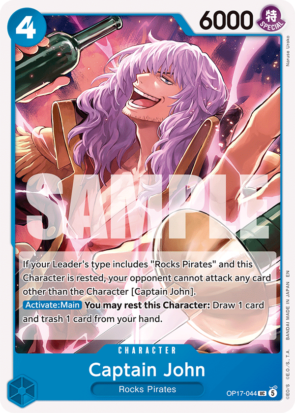
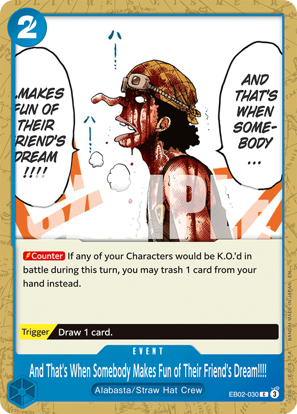
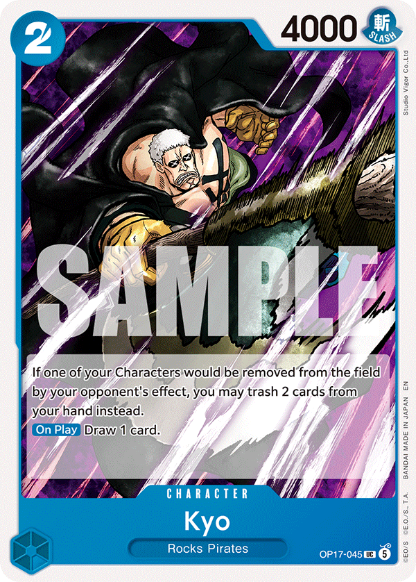
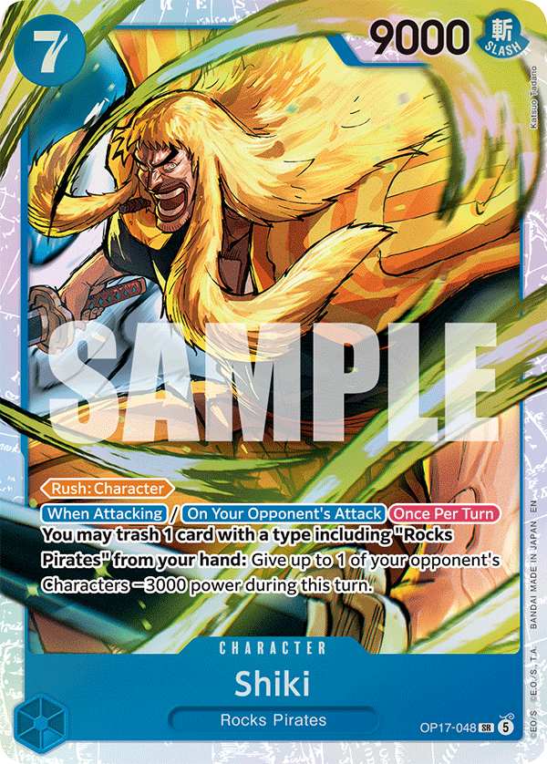
- Rocks is a Slash Leader. Mihawk naturally defends for free, and extracts more counter just on character select. This is not auto-win by itself, but it is the difference of several cards throughout a game.
- Rocks major weakness is that all of its primary attackers are 7 cost or less, so it is extremely weak to Luna. If Luna + Shanks combo didn't exist, this matchup wouldn't be so lopsided.
- Rocks wins by dealing damage to you really aggressively and trying to "stall out" your Lunas with Captain John. Even if you get them to 0, Captain John can keep them alive. Shanks does tap down the Kyo, but Captain John protects it, so you can't get to it and Vander Decken. Combined with the "Usopp event" - it can guarantee another turn for the Rocks player. Even just a single Captain John can buy them an extra turn. Account for these extra turns and don't go "all in" with Luna too early. Bepo is great to buy you an extra turn if they are stalling with John without having to burn a Luna. If you realistically can't kill them through a Captain John - remove some of their attackers with either Vander Decken or just board control them with the Shanks. For the most part - extra turns benefit Rocks but if you remove all their attackers / their defensive units then they will die anyway.
- Other than that - you get a lot of free damage because of the fact that your leader is 6000. When you refresh, you will be able to attack them for 7-9000 easily and push through their defenses with your leader.
- Play around Shiki by not attacking with just 1 6000 power body at a time. Remove Shikis on sight with Vander Decken if they're not protected by a Kyo. Removing Kyos with Yasopps in the early game is also worth it a fair amount of the time to prevent the snowball. Yasopp does a good job of also being an attacker that "plays around" Shiki by restanding itself.
- Attack Rocks for 7s when they don't have Newgate up. Attack them with your leader for 7 if they have Shiki up. Attack for 8s with characters or base numbers if they have Shiki up.
Sam considers Mihawk strongly favored into Rocks, particularly going second. Rocks has trouble interacting with Mihawk's board efficiently: Mihawk can play a 6-cost and a 5-cost body · both bodies often remain standing · Rocks cannot contest them except through very specific Gloriosa lines · if Rocks spends a Gloriosa turn, it is often not developing its own Newgate, Shiki, or Linlin engine · Mihawk's board keeps pressuring while Rocks falls behind on tempo.
Rocks wants to establish characters that create ongoing value (Newgate, Shiki, Linlin, Kyo, other 3k-counter and card-conversion bodies). Mihawk is difficult because it pressures Rocks' bodies and freezes its board before those cards can convert. Going second, Mihawk can often: develop a 6-cost plus 5-cost board · keep those bodies standing · force Rocks to choose between interacting and developing · play Shanks · Luna the board · put Rocks at zero before it can stabilize.
Perona is excellent because it can: freeze multiple meaningful bodies · reduce Rocks' ability to attack · protect the Mihawk player's hand and board · punish narrow development turns. ⚠️ Perona non è mai nominata nel segmento Rocks del video: le carte che Sam cita sono il board 6+5 in piedi, Rad Beam (vs Shiki), Shanks+Luna, Decken (su Shiki) e Stun Bonney sul loro 10.
Shanks plus Luna is especially strong because many Rocks bodies are Luna victims: Rocks has multiple 7-cost-or-less characters · its engines are often board-dependent · if Mihawk freezes them, Rocks loses its ability to turn hand cards into defense · Mihawk can then push large attacks while Rocks' board is disabled.
Rad Beam matters because Rocks often attempts to contest a body with Shiki. If Rocks uses Shiki to interact with a key Mihawk body: Rad Beam can save the body · Mihawk untaps with more board · Rocks has spent a turn trying to answer one unit · Mihawk double-develops and pulls further ahead.
Sam highlights Captain John plus Usopp spell as the main thing Mihawk should be aware of. Rocks can put Mihawk at zero; Captain John plus Usopp spell can create a sudden unblockable-style finish; if Mihawk becomes careless at zero, it may lose to a line it assumed was not available. However, she views this as rare and manageable. Mihawk can usually avoid dying by maintaining leader power, counter, Luna access, and appropriate board control.
Kyo does not change the matchup much. Kyo can protect Rocks from some effect removal, but Sam does not believe it fundamentally changes Mihawk's plan: Mihawk does not need Vander Decken to win the matchup · Luna can still disable the board · Rad Beam can save Mihawk bodies · Mihawk can attack face · if Kyo matters, a 6k attack into it is acceptable because Rocks' natural counter is heavily weighted toward 2ks. Decken is nice when it is available, but not mandatory.
- 01:28:48 Captain John / Usopp spell: "basically the only thing that can lead them to winning"; you are a 6k leader vs them and on some turns they only swing 5 because they must develop on curve. Two ways it resolves: you bleed every card out of their hand (uncommon), or they take the Usopp turn, discard six or seven cards, you Luna their board and still don't die.
- 01:30:22 If they present something relevant like Shiki to Decken mid-game, "I like taking that spot", unless you have a lot of Lunas.
- 01:31:15 "Probably the matchup where the Bepo is worst compared to the Shanks" (Luna-ing their board is so good); Stun Bonney off their 10-cost turn is "probably pretty good".
- 01:32:51 Micro: attack at breakpoints that demand multiple cards through Newgate/Shiki — "eights are good, or really specifically not sevens", when DON allows.
- 01:33:40 Kyo: send a six at it — Rocks' natural counter is almost all 2ks, so you put a 2k in their hand to make your Decken live later; eventually you Shanks and send a six into Kyo, and at that point you also have Luna. They should play John and Kyo in the same turn anyway, so you never get to Decken the John.
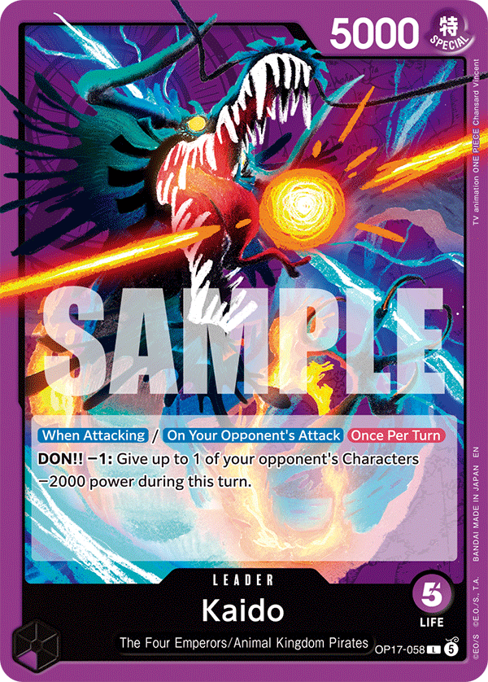
Vs Kaido (Purple)
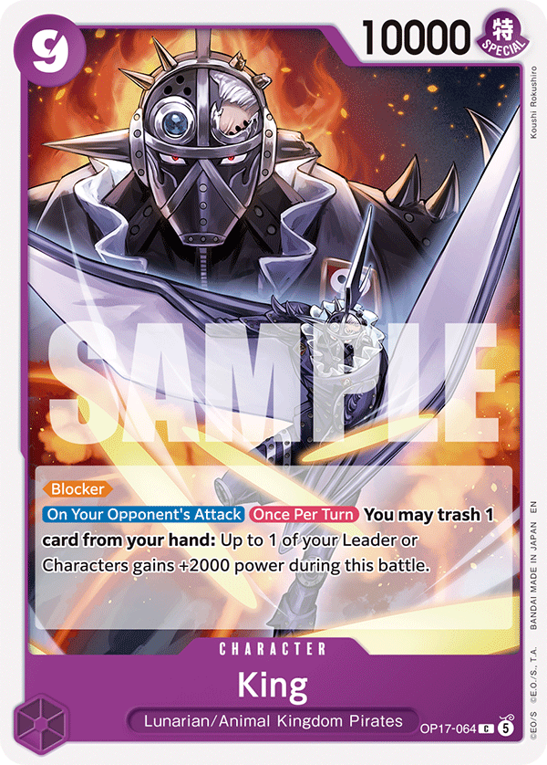
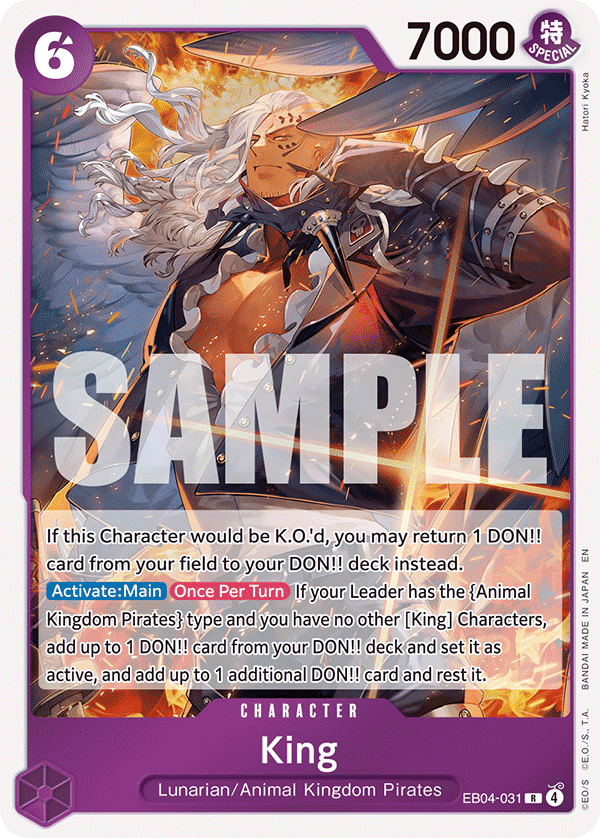
- Prior to the Fishman build, Purple ramp decks like Kaido (last set it was Katakuri) were favored as Law and Bepo wasn't really good enough at stalling out Kaido's bombs and a Big Mom swing turn was enough to put you far behind.
- Now with Shanks + Vander Decken combo, your opponents are investing a lot into getting to higher DON totals while you're pressuring and you're able to remove their investment while generating tempo. It is similar to Red Roc while you already have a board, except the board is a 12K rush + everything else!
- Vs Kaido - it is important to understand how to attack to play around their leader skill. Make sure your 6000 power characters attack for 7000. It is a better investment to put the DON on the characters than the leader when trying to get cards. When trying to push for lethal, it is a better investment to put the DON on the leader since the leader doesn't come with a theoretical -2000 power.
- Getting Kaido to 0 isn't that easy as they have multiple heals. Luckily the deck is very bricky and if you're able to pressure multiple 7000 power swings throughout the game they will fall to low life totals and be forced to heal.
- Yasopp is very important vs Kaido. It allows you to push with a character without being afraid of them attacking back into it. Later in the game, you also use it to restand Shanks after attacking with him to play around 10-Mom.
- Take their first so you can develop an extra attacker and slow down their ramp. Ramp decks typically want to go first as they want more turns to use their extra DON.
- Once you get the Kaido low in life - it is easy to close out the game with a Shanks Vander Decken combo removing a body and setting up lethal. Once they are low in hand, it is easy to use Shanks + all the free DON between the leader and Shanks to attack big into their rested bombs as well. Just make sure to fish out the leader skill with your 6000 power attacks from other units first.
Sam sees Kaido as a reasonable but more difficult matchup than Rocks or yellow Big Mom decks. Kaido is dangerous because: it can interact with Mihawk's board · it can play large bodies · it can remove or punish exposed characters · it can make the standard Shanks plus Vander Decken plan less effective. Decken has made the matchup worse than it was previously. The biggest issue is that Kaido can punish the standard Mihawk bomb sequence and force Mihawk to work harder for board retention.
→Oden is one of Mihawk's best cards against Kaido because it can stop King from attacking. If Kaido misses King, Sam believes Mihawk is generally heavily favored: Kaido lacks enough attack instances · Mihawk can develop more efficiently · Mihawk can freeze the board · Kaido struggles to both attack life and contest Mihawk's board. The Kaido player's most threatening games are the ones that establish King early, then use larger attacks to pressure Mihawk before its bomb turn.
Vander Decken is good against Kaido, but Mihawk's plan is not fully dependent on it. If Mihawk cannot Decken the relevant Kaido body: it can Rad Beam to protect board · it can freeze King · it can pressure face · it can eventually Shanks/Decken a relevant body · it can use Law/Bepo as a second bomb. The matchup is not free, but Sam still sees Mihawk as having enough strong lines.
- 01:37:39 Pick first. You can Stun Bonney them off King, but only if they did not play a second ramp (their game very often includes Queen); "when you take them off the King turn you immediately win".
- 01:38:26 You will "basically never" interact with their first bomb (only if they blocked with Kaido, then you Decken it). Flow going first: five on 5, six + five on 7, something turns at them; after their bomb they contest that body with the leader and you Rad Beam it; even the removal Kaido leaves you untapping with two bodies, then you play two more.
- 01:39:15 Kaido "has no unfair counter tricks" (leader 2k when they can afford DON −1, and Beam Sword). The early game puts them to one or a "fake zero" (they heal to one with Lead Performers or Big Mom). At their second bomb you Shanks — "essentially no way for them to cover the 12" — and Decken one of their bombs and attach DON elsewhere: a damage, a counter demand and a bomb cleared in one turn. Their next Mom clears your Shanks; you play another Shanks or Law; they end up forced to send lethal from a low-counter position while you are at high life because their attacks went into your board.
- 01:41:39 Without Decken it's harder but you usually have it by then. "Lunas are very uniquely bad in this matchup — you are generally trying to pitch it away"; maybe Luna just the King if needed to not die.
- 01:42:27 Oden on 7 and 9 to stun King is one of your biggest priorities. If they miss King "you also always win"; then Stun Bonney into their 10 leaves them only Lead Performers, "a vanilla that heals someone".

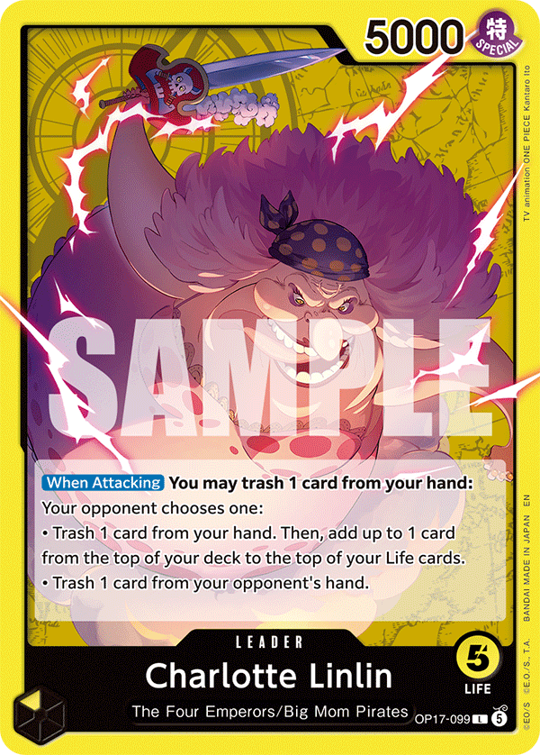
Vs Robin e Big Mom gialli (Linlin, Pudding)
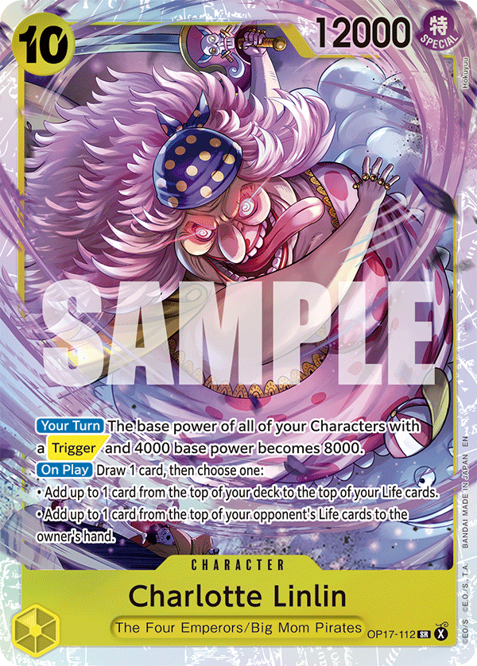
- Robin tries to starve you and board control your characters with 3 Sweet Generals. They try to attack you and get you to counter. Best way to counteract this is take the first couple of leader swings while focusing your energy on drawing a lot of cards with Samurai so you can easily get around their leader skill starving you.
- Use Yasopp to remove their 4000 power bodies so that they don't have a huge board once they ramp to 10 DON and play Charlotte Linlin.
- Shanks + Vander Decken and Luna the 4K Bodies is the win condition.
- Yasopp is very key as it is an attacker they can't easily remove with 3 Sweet Generals.
- Pressuring Robin is very key. You can't let them comfortably play 2 Big Moms as it'll create a lot of trouble for you if you can't remove the "buff their team" effect.
- They don't really play KO triggers outside of maybe 1-2 Teach so pressuring them with your bodies is good, and go as wide as possible to make sure you have an efficient clock as well.
- Once you comfortably are in B2B Shanks turns, the opponent will lose. The matchup is not good for Robin with Yasopp controlling them in the early game and Shanks removing all their attackers while setting up counter pressure. Just do what you can to make sure their Moms aren't getting enough advantage before then that you're left in a gamestate that isn't recoverable.
- Don't really need to "play around" Gum Gum Giant. Just attack 7s and force it out when possible. Most of the time be prepared for Robin to live a turn longer than you think she will. She is very tanky with Borsa + Giant turns. Make sure that they don't have established attackers going into their defensive turns and all those turns will do is extend the game that you will inevitably win. If they have attackers and begin to stall is when it becomes a big problem for you.
Sam believes Mihawk is favored into yellow Big Mom decks, including Robin-style shells. The reason is that Mihawk devalues the ways yellow decks want to convert board. Yellow decks want to: build wide boards · play Big Mom · heal · use trigger bodies · attack with several mid-sized characters · force the opponent to spend cards defending life. Mihawk answers this with: Perona freezes · Oden freezes · Shanks plus Vander Decken · Luna · Law/Bepo · high leader power · repeated double development.
Mihawk should: take early damage when safe · develop bodies · freeze relevant 4k and 5k attackers · prevent Big Mom board turns from converting · push the opponent low before they establish repeated healing · use Shanks to remove the major body · use Luna to freeze triggers and smaller attackers · force the yellow player to attempt lethal from a low-counter position.
Stun Bonney is particularly useful into yellow Big Mom decks. If Mihawk stuns the opponent on their first major Big Mom turn: they may have no productive 10-DON!! play · their whole curve can become delayed · Mihawk gets another turn to develop · the opponent's board is still too narrow to pressure effectively · Mihawk can often take damage safely and then execute a bomb turn. The main exception is Pudding, which may have alternative plays and more flexible development.
- Counter banish hits more often than against many other decks because Robin's available DON!! is constrained.
- The banish attacks are frequently small enough that countering is efficient.
- Taking the first damage is often fine.
- If Stun Bonney is available, Mihawk can take damage more liberally because Robin cannot execute the first 10-DON!! turn.
- Make Linlin discard unless the random discard can hit a card that fundamentally ruins your game plan.
- If the opponent is low on hand, force the heal because discarding the extra card becomes a real cost.
- Never allow a heal if you are currently presenting lethal.
Why Mihawk wins: Mihawk can repeatedly freeze yellow's small attackers · survive while preserving board · prevent the Big Mom board from converting · put yellow low enough that a Shanks 12k swing becomes impossible to defend · force yellow to spend too many attacks into Mihawk's board, leaving Mihawk healthy enough to survive a final push.
- 01:44:04 "Robin is the best yellow slop deck"; what she says about Robin applies to Linlin too. Linee concrete: if their board is wide enough to bomb you, Perona some 4ks so the Mom turn does little, then clear the Mom next turn with Shanks+Decken; or send your board, Shanks, Luna all the triggers, and only the 12k body is left.
- 01:44:54 Law/Bepo is fine but "generally worse than the Luna stuff" here (their bodies are still 8ks); still counterable given few swings.
- 01:45:41 Robin triple ramp: going first they can double pitch to leader + a ramp card and hit 10 "on your eight", so a Bonney would have to come on your six, taking you off the Mihawk turn. But that costs them two discards and a ramper (one fewer 4k on table), so their board is narrow, Perona is a fine answer; you double develop, Perona again, then your bomb cleans up "essentially their entire board". 01:48:02 Bonney on your six is still fine because most of these decks have nothing else to do on 10 but Mom; exception Pudding.
- 01:49:01 The Linlin deck "will essentially never do anything threatening": both players discard a card each turn when they choose; you attack a lot and Perona / Bonney / Luna them.
- 01:49:49 Disciplina: don't commit Shanks (or Perona) before sending your attacks, because triggers can play bodies over your Luna/Perona and you then can't attack under them.
- 01:50:36 Vs Robin counter the banish hits; vs the other yellow decks take at least the first damage; with Bonney in hand take much more; otherwise counter to stay at 4 or 3.
- 01:56:38 La lista gialla di Jelly Beans (9c Bonney, Robin burn): should be fine, you still beat them by Bonney-ing the Mom turn or freezing enough board; "you can still counter the seven that comes afterwards with a Rad Beam".
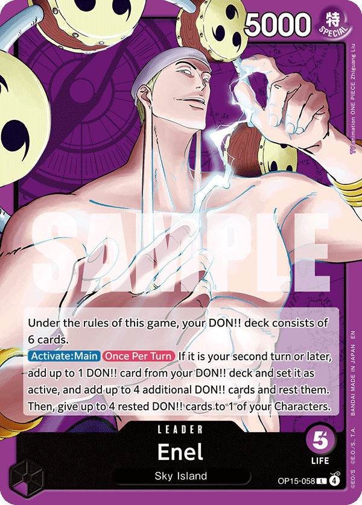
Vs Enel (Purple)
- Establish searchers to remove their 1 cost units without having to invest much in doing so.
- Use your leader to try and pressure a life every turn ideally. Don't really expect your board to stick / not be frozen. If something sticks, use it to swing 7000.
- Oden is great at stalling out big Enels, Save them to try and do so. Yasopp is great at removing their 4 cost units to prevent them from snowballing into you with stuff sticking into another 4c + removal turn.
- Shanks is great at removing their board or dealing damage. If you can get an Enel to 1 life, back to back Shanks is an easy win. If they are still at high enough life, then using Shanks to deal with a Reiju and using your weenies to clear their 1 costs is a strong turn as well.
- Make sure to avoid taking too much damage from Enel. Try to counter at least 1 of their swings per turn so that you don't lose more than 1 life a turn. You'll need a life buffer to resolve back to back Shanks as Enel is one of the decks that can pressure you efficiently.
- Shanks + Luna and then putting the Shanks into the Reiju while pushing 7 with lead is a big swing turn. Try to save the pieces, as it is a 4 card combo, but it'll be expensive and hard to pull off the combo multiple times so try to make sure the turn you do the combo that the Shanks is actually setting up a win on the following turn. Assume your Shanks dies and then you're sending lethal with your leader and another Shanks.
- Getting Enel to 0 is basically game over as Shanks send 5 17 is basically always game since they have no +3-4k Event counters.

Vs Ace Luffy (RG)
Sam views Ace Luffy as generally favorable for Mihawk. Ace Luffy often has limited counter and relies on its board to pressure. Mihawk can: freeze the board · attack life with large numbers · counter more aggressively after the first life · use Shanks and Luna to invalidate early bodies · outdevelop Ace Luffy over time.
Mihawk should: take the first life when safe · counter the second life more often to avoid random double-strike lethal · use Oden to freeze a relevant attacker · attack Ace Luffy rather than overfocus on board · use Shanks and Luna against the wide early board · push life because Ace Luffy often cannot defend repeated 7k attacks. Going second is favored because Mihawk's development is ahead and the bomb turn arrives earlier. Going first may require more aggressive countering on the 4-DON!! and 5-DON!! turns because those are some of the cheapest attacks Ace Luffy will make.
Vs Black (Elbaph) Luffy
01:57:31 Same plan as Sabo but their attacks are smaller; always go face (no incentive to starve — their leader stays the same size); still attack a sideways body if offered; Shanks on their full board is fine. 01:59:05 Vs Elbaph Luffy (which doesn't buff its full board) you just race.
Il video e cosa manca nelle note
op17 mihawk deep dive
Apri su YouTube · trascrizione automatica completa in trascrizioni/samsans-video-trascrizione.md.
Capitoli
Dove le note non coincidono col video
Sintesi · verificato sulla trascrizioneLe note ordinate sono fedeli nella grande maggioranza dei punti. Questi sono i casi in cui dicono qualcosa di diverso (o in più) rispetto al video; nelle pagine della guida sono già segnalati con ⚠️ al posto giusto.
| Tema | Le note dicono | Sam dice nel video |
|---|---|---|
| Coffin Boat | Shanks e le carte care usano più DON!!, quindi ci sono meno turni con DON!! liberi per convertire un evento. | 00:21:34 Senza 7c/9c Shanks è "very easy to have DON open to convert the Rad Beams": più DON!! liberi, quindi lo stage serve meno; e ci sono molti meno eventi. |
| Decken vs Kaido | «Decken has made the matchup worse than it was previously» (tra i motivi per cui Kaido è pericoloso). | 00:17:37 Decken ha peggiorato il matchup per Kaido: "the biggest reason why I would not play Kaido". |
| Kaido: primo o secondo | Non lo dice. | 01:37:39 "The only matchup I can think of where you want to pick first." |
| Kaido: tono | «Reasonable but more difficult»; «a plan for whether Shanks or Law/Bepo is the better first bomb». | "Pretty chill", "if they miss the King you always win"; non discute mai quale bomba prima; il 12 di Shanks alla loro seconda bomba è incopribile. |
| Cosa ferma King | «Perona or other stuns». | 01:42:27 Specificamente Oden su 7 e 9. |
| Luna vs Kaido | Non lo dice. | 01:41:39 "Very uniquely bad", da scartare. |
| «Early 8k attacks» (Kaido) | Tra le priorità vs Kaido. | 01:54:02 È nella risposta su RG Luffy Ace. |
| Numero di bombe | «She does not believe four copies are necessary.» | 00:29:23 "I just don't think that you need five" — mai "four". |
| Brook (Sabo) | «Saul, Loki, Luffy, and Brook». | Brook non è mai nominato. |
| Perona vs Rocks | Blocco «Perona is excellent». | Perona non è nominata nel segmento Rocks (board 6+5, Rad Beam, Shanks+Luna, Decken, Bonney). |
| Ace Luffy | «Generally favorable… cannot defend repeated 7k attacks». | 01:52:26 "I don't have a great answer"; favorito secondo, primo "maybe problematic". |
| Search Priority / Know Which Attack Matters | Due sezioni con liste per matchup. | Non dette nel video: sintesi di chi ha scritto le note. |
| «65-body» | «Develop a 65-body on 6… another 65-body on 8». | 00:43:34 "A six drop on six and then a six drop on eight." |
| Perona quando viene attaccata (Sabo) | «Protects against removal by replacing itself.» | 01:07:10 "Float into something if it dies, so you can just let it die and summon an Oden." |
| Bonney vs Robin | Bonney sul primo turno Big Mom, in generale. | 01:46:29 Vs Robin che fa triple ramp vuol dire Bonney sul tuo 6, perdendo il turno Mihawk: accettabile, non ideale. |
| Potenza del leader | Non la dà. | Sam dice "7k leader" (vs giallo) e "6k leader" (vs Rocks); la carta è 5000, +1000 vs leader <Slash>, +1000 per DON!!. |
- La build senza Decken (Stun Bonney + Law/Bepo, più 6 costi e più eventi) — 00:15:11, 00:41:00.
- Perché niente 7c/9c Shanks — 00:31:12.
- La matematica del turno Bonney a 9 DON!! e il "dead to 10k+12k / 11k+12k" — 00:48:21.
- Decken sul 7c Shanks avversario — 00:58:59.
- Il leader di Sabo guadagna 1k a 3 vite — 01:08:46; six-on-six vs Sabo — 01:59:05.
- Rocks: attacca a 8, non a 7 — 01:32:51.
- Robin: triple ramp → 10 sul tuo 8 — 01:45:41.
- Black (Elbaph) Luffy e la lista gialla di Jelly Beans — 01:57:31, 01:56:38.
Tutto il dettaglio (75 punti) è in trascrizioni/samsans-video-vs-note.md.
Q&A del video (33 domande)
| Quando | Domanda | Risposta (sintesi) |
|---|---|---|
| 00:16:48 | Isn't Shanks/Decken better into yellow slop and Kaido than Bonney/Bepo? | Better into Kaido for sure; not meaningfully into yellow (Bonney their 10 turn, Bepo next turn, 7k leader). Without Decken you lose to Kaido, but Kaido should shrink if everyone plays Decken (item 11). |
| 00:21:34 | Why not as many Boats? | Without 7c/9c Shanks you easily have DON open to convert Rad Beam, and there are far fewer events; Boat's remaining merit is the cantrip; could be convinced to play a third. |
| 00:23:12 | Robin played a ramp card on turn 2 going first, threatening 10 on turn 4 — Bonney? | (Clarifies they'd need to double pitch.) Would probably not Bonney unless their board is wide enough to matter; if it is, Bonney is fine. |
| 00:24:12 | The other 3k events? | Stronger stuns too few; For Fun can't be forced and gets played around; DMG lethals don't happen and RG is unplayable; none defend the board. |
| 00:28:33 | Do you attack in every matchup? | Yes, including Sabo, with caveats covered in the Sabo section. |
| 00:29:23 | Law/Bepo count? | Don't need five; deck is tight; you need to draw two bombs, sometimes one; Law is the more consistent second bomb. |
| 00:29:23 | Is the list in Codex? | Not yet; after the session. |
| 00:30:26 | Hody? | Not terrible, but an unnecessary brick. |
| 00:31:12 | Bonney turning off Rocks? | Good but not why it's there. |
| 00:31:12 | 7c / 9c Shanks? | No: Decken trades too well; 9 = Decken; 7 shouldn't be turned sideways and anti-synergises with stuns/Luna. |
| 00:32:50 | Mihawk+Perona just for the mirror? | Mainly, but Mihawk is also just the better card (standing, bigger body). |
| 00:34:50 | What are Elijah / Josh on? | Doesn't know Elijah's; Josh prefers Laws; 47 cards shared; Bonney/Bepo slots vary. |
| 00:35:37 | Blocker must be good (vs RG Luffy Ace)? | Perona is far better; Ace has no 2ks; Yasopp is terrible there (+3 bodies); green Luffy rests blockers. |
| 00:38:13 | 2 Law / 2 Mihawk? | No — everything except Bonney is worse with Law. |
| 00:39:00 | Zoro 2k? | Good in the mirror but current 2ks matter more. |
| 00:40:13 | Cut two events for Zoro? | No — multiple Rad Beams per game matter. |
| 00:40:13 | What changes if you cut Decken? | More sixes (Laws + Mihawks), more Laws, more events; sample list later. |
| 00:41:00 | Fewer than four Samurai? | No, four for sure. |
| 00:58:07 | When would you not play Boat? | Only when the DON is needed (Luna turns); play it after refreshing. |
| 00:58:07 | First or second in the mirror? | Second, "for sure". |
| 00:58:59 | Decken the 7c Shanks? | Usually yes (kills a 9k); always going second; going first also fine unless you're Luna-ing anyway. |
| 01:01:25 | Should the going-first player slow development to push damage? | Only the six on 9 is skippable; otherwise hands aren't made enough to skip Samurai/searchers; won't Otama for nothing. |
| 01:04:36 | Always slam the 10 drop on 10? | Yes; delaying just delays the game; Bonney+five on 10 is theoretical. |
| 01:16:40 | Decide starve vs attack before the game or from information? | Default attack; exceptions: opponent mulligans and skips 2 while your hand is bad, or they counter too early at 4 life. |
| 01:20:41 | What if you miss pieces (Bepo without Shanks, Shanks without Decken)? | Bepo alone is fine; Shanks alone = race (Shanks-Luna, counter leader+Loki); early: Bonney off Loki, Perona the five. |
| 01:23:59 | Does Sabo ever keep bodies standing? | Attacking disincentivises it; with one Saul they often still should; Loki lets them turn Saul. |
| 01:25:36 | Should Oden freeze the big body instead of the weenie? | Freeze the weenie if you have Decken and accept the damage; freeze the big one only if you can't take the damage. |
| 01:33:40 | What if Rocks plays Kyo? | Basically nothing changes; six into Kyo to draw a 2k; Luna covers it; John+Kyo come the same turn anyway. |
| 01:52:26 | Vs Ace? | Oden their guy, attack, counter the second life; favoured second; going first counter the 5ks on 4 DON. |
| 01:54:57 | Is this list good beyond the mirror? | Very good vs everything but Sabo; the most mirror-built list within reason; Yasopp would add a couple of points vs Sabo. |
| 01:56:38 | Tested Jelly Beans' list? | Not specifically; same reasons apply; 9c Bonney is their alt bomb; Rad Beam the seven after the Robin burn. |
| 01:57:31 | Plan vs black Luffy? | Same as Sabo but smaller attacks; always go face. |
| 01:59:05 | Vs Sabo, six-on-six or face? | Six into the six (kill the body) because the leader becomes six after one more damage anyway; vs Elbaf Luffy just race. |
Carte e soprannomi
Dizionario dei soprannomi
| Come la chiamano | Carta | ID |
|---|---|---|
| "Shanks", "10 Shanks", "5 cost 12000 rusher" | Shanks | OP17-022 |
| "Law/Bepo", "Lobo", "Bepo" | Law & Bepo | ST24-004 |
| "Law" (Impact), "Law 5c" (Sam: gioca il 5 costi dalla mano) | Trafalgar Law 6c | OP13-031 |
| "6c Mihawk", "the six cost Mihawk" | Dracule Mihawk 6c | ST32-003 |
| "Perona" (Sam, il 5 costi che stunna) | Perona 5c | OP14-033 |
| "Perona" (Impact, la searcher che "finds everything") | Perona 1c | OP12-034 |
| "Stun Bonney", "OP07 Jewelry Bonney" | Jewelry Bonney 5c | OP07-026 |
| "Oden" | Kouzuki Oden 5c | ST32-002 |
| "Decken", "Vander" | Vander Decken IX | OP06-033 |
| "the extra Fishman" (pitch per Decken) | Kawamatsu | OP12-023 |
| "Samurai", "YCBMSamurai", "Samurai effects" | You Can Be My Samurai!! | OP01-055 |
| "Rad Beam" (Sam), "Billions", "Billionfold" (Impact) | The Billion-fold World Trichiliocosm | OP06-038 |
| "Luna" | Electrical Luna | OP08-036 |
| "Stronger" | I Know You're Strong… So I'll Go All Out from the Very Start!!! | OP13-040 |
| "DMG", "Dead Mans Game" | Demon Aura Nine Sword Style Asura Blades Drawn Dead Man's Game | OP12-037 |
| "For Fun", "Fun their guy" | For Fun | OP14-037 |
| "Boat", "Stage", "Coffin Boat" | Coffin Boat | OP14-039 |
| "Kinemon" | Kin'emon 1c | ST32-001 |
| "searchers", "ones", "one-drops" | Otama · Perona 1c · Kin'emon | OP07-022 · OP12-034 · ST32-001 |
| "2ks", "2k counters" | Le carte con counter 2000 (Otama, Kawamatsu…) | — |
| "6k bodies", "a six", "a five", "6+5" | I personaggi da 6 costi (Law/Mihawk) e da 5 (Oden, Yasopp, Perona, Kawamatsu, Bonney) | — |
| "Usopp event", "Usopp spell" (Rocks) | And That's When Somebody Makes Fun of Their Friend's Dream!!!! | EB02-030 |
| "Giants", "12-costs" (Sabo) | Jaguar D. Saul · Loki (+12 costo) | OP17-089 · OP17-119 |
Le carte del deck
Leader
Dracule Mihawk
[Activate: Main] [Once Per Turn] You may rest 1 of your cards: If there is a Character with a cost of 5 or more, set up to 3 of your DON!! cards as active. Then, you cannot play Character cards during this turn.
Searcher e filtro (1 costo)
Otama
Perona
Kin'emon
Removal
Vander Decken IX
Corpi da 5-6 costi ("65-body")
Kawamatsu
Yasopp
[End of Your Turn] Set up to 1 of your Characters with a type including "Red-Haired Pirates" as active.
Kouzuki Oden
Trafalgar Law
[On Play] You may return 1 of your Characters to the owner's hand: Play up to 1 Character card with a cost of 5 or less from your hand rested.
Dracule Mihawk
[On Play] If your Leader has the attribute, play up to 1 Character card with a cost of 5 or less that is either [Perona] or has the attribute from your hand.
Perona
[On K.O.] You may rest 1 of your cards: Play up to 1 green Character card with a cost of 5 or less from your hand.
Jewelry Bonney
Bombe da 10 costi
Shanks
[On Play] Set up to 2 of your DON!! cards as active. Then, rest all of your opponent's Characters.
Law & Bepo
Eventi
You Can Be My Samurai!!
The Billion-fold World Trichiliocosm
Electrical Luna
For Fun
[Counter] Your Leader gains +3000 power during this battle.
I Know You're Strong... So I'll Go All Out from the Very Start!!!
[Counter] Your Leader gains +3000 power during this battle.
Demon Aura Nine Sword Style Asura Blades Drawn Dead Man's Game
[Counter] Your Leader gains +3000 power during this battle.
Stage
Coffin Boat
[End of Your Turn] If your Leader is [Dracule Mihawk], set up to 1 of your DON!! cards as active.
Tech citate da Impact
Hody Jones
[On Play] Rest up to a total of 2 of your opponent's Characters or DON!! cards. Then, add 1 card from the top of your Life cards to your hand.
Smoker
[Activate: Main] Set up to 1 of your DON!! cards as active. Then, you cannot set DON!! cards as active using Character effects during this turn.
Leader e carte chiave degli avversari
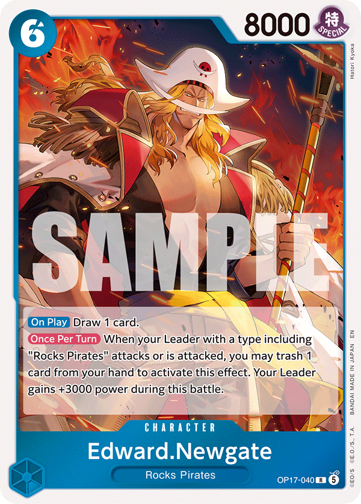
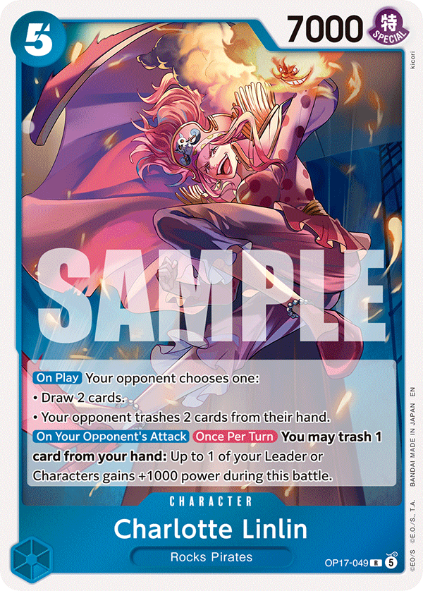
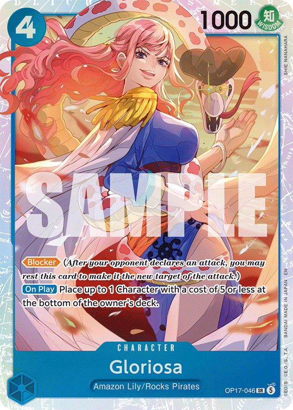
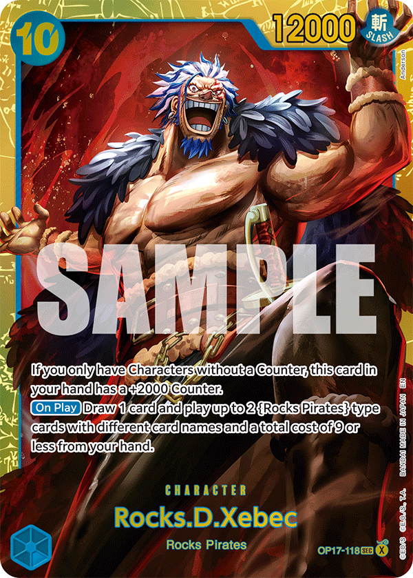